통념을 넘어 사실에서 답을 찾는 다섯 개의 질문
우리 사회와 세계 정세가 빠르게 변할수록 주변에는 검증되지 않은 통념이나 진영 논리에 기댄 주장들이 쉽게 퍼지곤 합니다. 이럴 때일수록 익숙한 구호에 머물기보다, 우리가 당연하게 여겨온 전제에 질문을 던지고 구체적인 사실과 데이터를 차분히 살펴보는 일이 필요합니다. 이번 호에서는 노동과 에너지, 인권 문제부터 미국과 중국의 정치적 변화에 이르기까지, 국내외의 주요 쟁점들을 현장의 시각과 자료를 바탕으로 짚어본 다섯 편의 글을 모았습니다.
정흥준 사회적 대화, 전략적 활용인가? 조건 없는 폐기인가?
사회적 대화가 시작된 지 벌써 25년이 지났지만, 노동운동 안에서는 이를 조건 없이 폐기할지 전략적으로 활용할지를 두고 여전히 고민이 깊습니다. 그동안의 성과만큼이나 구조적 한계도 뚜렷한 상황에서, 만약 노동조합이 사회적 대화를 전략적으로 활용한다면 과연 어떤 재설계가 필요할지 의문이 남습니다. 오랜 시간 이어진 이 무거운 과제에 대해 정흥준 교수가 노동의 관점에서 차분하게 해법을 모색해 주었습니다.
석광훈 이재명정부의 3대메가프로젝트와 신규원전 논쟁 어떻게 볼 것인가?
이재명 정부의 메가프로젝트를 완성하려면 신규 원전 건설이 필수적이라는 압박을 우리 모두 받고 있습니다. 급증하는 반도체와 AI 전력 수요 앞에서 과연 원전 추가 건설만이 유일한 해답인지 근본적인 의문이 남습니다. 우리 모두가 마주한 이 질문에 석광훈 전문위원이 전력망의 현실과 데이터센터 시장의 흐름을 짚으며 명쾌한 답변을 제시해 주었습니다.
앨런 도밍게스 Allen Dominguez 공화당 텃밭 텍사스에서 사회주의를 싹틔우는 청년들
공화당의 오랜 텃밭이던 미국 텍사스가 38년 만에 뒤집히고 청년들이 사회주의에 호감을 보인다는 소식에 많은 이들이 주목하고 있습니다. 가장 보수적인 지역에서 청년들은 과연 어떻게 동료들의 마음을 얻고 일상의 문제를 함께 해결할 힘을 키워냈는지 궁금증이 일 수밖에 없습니다. 그 변화의 현장에서 청년 사회주의 운동을 이끌어온 텍사스주립대 학생운동 지도자 앨런 도밍게스가 생생한 이야기를 들려주었습니다.
김경내 차별금지법 제정, 가짜뉴스와 맞서야: 청년층 인식 조사 분석 결과
손솔 의원(1월), 정춘생 의원(2월)에 이어 여당인 박주민 의원(11월)까지 올해 잇달아 포괄적 차별금지법안을 발의하면서, 이번에는 과연 발의를 넘어 실제 제정까지 나아갈 수 있을지 기대와 의문을 동시에 품고 있습니다. 입법을 가로막는 수많은 가짜뉴스와 반대 주장들을 실제 시민들은 어떻게 받아들이고 있는지, 그 구체적인 인식이 궁금하지 않을 수 없습니다. 그동안 공개되지 않았던 여론조사 심층분석 결과를 통해 김경내 연구원이 그 물음에 대한 답을 제시해 주었습니다.
신석진 중국공산당 ‘전면종엄치당(全面從嚴治黨)’의 비밀
14억 인구의 거대한 중국이 과연 억압과 독재만으로 저토록 역동적으로 굴러갈 수 있는가 하는 의문을 품어본 경험 있으셨는지요? 미국과 한국 등 주요 자본주의 국가들의 정당정치가 방향을 잃고 표류하는 오늘날, 1억 당원과 540만 풀뿌리 조직을 하나로 묶어 국가 전략을 관철하는 작동 원리가 무엇인지 궁금하지 않을 수 없습니다. 제가 쓴 이 글에서는 창당 105주년인 2026년 10월 채택된 20기 5중전회 ‘결정문’과 시진핑의 해설문을 통해 거대 정당을 움직이는 ‘전면종엄치당’의 실체를 편견 없이 추적해 보았습니다.
바쁜 일정 속에서도 귀한 원고를 보내주신 필자분들께 깊이 감사드리며, 이번 호에 실린 글들이 독자 여러분께서 우리 사회와 세계의 변화를 이해하시는 데 작은 참고가 되기를 바랍니다.
2026.11.16.

사회적 대화, 전략적 활용인가? 조건 없는 폐기인가?
이 글은 노동의 관점에서 사회적 대화의 효용을 살펴본다. 사회적 대화가 시작된 지도 벌써 25년이 되었다. 다양한 성과만큼이나 구조적 한계도 확인되는데 노동운동의 고민도 깊다. 노동조합이 사회적 대화를 조건 없이 폐기할 것인가, 아니면 전략적 활용할 것인가를 두고 논란이 많다. 나아가 노동조합이 사회적 대화를 전략적으로 활용한다면 어떤 재설계가 필요할까.
사회적 대화의 성과와 구조적 결함
우리나라 사회적 대화는 김대중 정부가 본격적인 문을 열었다. 1998년, IMF 외환위기를 겪으며 김대중 정부는 노사관계 제도화와 노동시장의 유연화를 교환하는 제도적 변화를 위해 노사정 사회적 대타협을 추진하였다. 구체적으로 노동시장 유연화를 위해 정리해고와 파견근로제가 도입하되 동시에 민주노총의 합법화, 공무원과 교원의 노조 활동 보장, 복수노조 허용 등 노사관계 제도화를 합의하였다. 1997년에 김영삼 정부에서도 노사관계개혁위원회가 비슷한 논의를 하였는데 합의에 이르지는 못했다. 1998년 민주노총은 노사정위원회에 참여하여 사회적 대화에 합의했으나 투쟁으로 노동조합의 인정을 쟁취하는 것이 아닌 주고받기식 거래에 대해 지도부를 비판하며 노사정위원회 참여를 중단하는 결정을 내렸다.
그 후 민주노총은 노사정위원회에 참여하지 않았으나, 사회적 대화의 제도화는 꾸준히 강화되었다. 우선, 김대중 정부는 노사정위원회법을 통해 노사정위원회를 법적 기구로 공식화하였다. 이어 노무현 정부는 노사정위원회를 경제사회발전노사정위원회로 이름을 바꾸고 의제별, 업종별 사회적 대화를 체계화하였다. 노무현 정부에서 노정관계는 원만하지 않았으나 사회적 대화를 통한 성과는 이어갔다. 사회적 대화는 이명박·박근혜 정부에서 부침을 겪었으나 2018년 문재인 정부는 양 노총과 함께 사회적 대화 개편을 추진하였고 경제사회노동위원회로 명칭을 바꾸고 계층별 위원회를 두어 비정규직·여성·청년의 대표성을 강화하였다. 문재인 정부에서 사회적 대화는 여러 성과가 있었는데 국제노동기구(ILO) 87조, 98조 협약 비준과 주 최대 52시간 합의가 대표적이다.
우리의 사회적 대화는 의미 있는 합의를 성과로 남겨 왔으나 근본적인 결함이 있음을 부정할 수 없다. 대표적으로 민주노총이 여전히 경사노위에 참여하지 않고 있는 것인데, 이로 인해 노동계는 대표성을 충분히 확보하지 못하고 있다. 한국노총이 노동조합의 대표성을 위임받아 사회적 대화에 참여해 왔으나 노사정 합의에도 의미가 퇴색될 수 있는 부분이다. 한편, 노사정 논의에 대해 참여하지 않은 민주노총은 노사정 합의에 대해 상대적으로 자유로운 비판이 가능했다. 그러나 노사정 논의에 참여하지 않은 민주노총의 비판은 설사 그 내용이 타당하더라도 사회적 주목을 받기 어려웠는데 사회적 합의는 가장 합리적인 답을 찾는 것도 중요하지만 노사정이 논의에 참여하는 절차가 중요했기 때문이다. 따라서 사회적 대화에 참여하지 않은 민주노총은 사회적 대화를 비판할 정당성을 인정받기 어려웠고 결과적으로 양 노총은 모두 사회적 대화의 승자가 될 수 없었다.
지난 25년을 돌아보면, 국민 다수가 사회적 대화의 중요성을 인정하고 사회적 합의에 대한 사회적 지지도 컸지만 사회적 대화는 비정규직, 양극화 등 노동시장의 구조적인 문제까지 바꾸지는 못했다. 이는 우리의 사회적 대화가 제도적 문제가 아니라 구조적 결함을 가지고 있었기 때문일 수 있다.
사회적 대화의 한계
한국의 사회적 대화는 25년을 지속하면서 비정규직 등 노동시장, 노사관계, 사회안전망, 노동보건안전 분야에서 크고 작은 입법 성과가 있었다. 예를 들면 고용보험의 단계적 확대, 주 최대 52시간 확정, ILO핵심협약 비준, 공공부문 노동이사제 도입, 특수고용 전속성 요건 폐지, 공무원노조 근로시간면제 적용 등이 대표적인 사례이다.
사회적 대화의 제도적 성과에는 정부의 노력이 컸다. 그런데 노사정간의 힘과 간절함의 차이는 사회적 대화의 약점으로도 작용했는데 과도한 정부 중심성은 때론 사회적 대화를 위기로 몰아 넣었다. 예를 들어 정부가 노동시장에 대한 관심을 가지고 있으면 정부가 사회적 대화를 활발하게 운영하면서 입법 성과를 내려고 노력하지만 그렇지 않은 상황에서는 사회적 대화가 파행을 겪거나 중단되곤 하였다. 주로 보수 정부에서 사회적 대화는 종종 중단되었다. 박근혜 정부는 2015년 노사정 대타협을 왜곡하여 취업규칙 불이익 변경과 저성과자 해고를 추진하다 사회적 대화를 좌초시켰다. 또 다른 극단적인 사례는 윤석열 정부에서 일어났다. 윤석열 정부는 이전 보수정부보다 유독 폭력적인 방식으로 반노동정책을 펼쳤고, 노동조합을 인정하려고조차 하지 않았다. 이런 조건에서 사회적 대화가 운영될 리가 만무했다. 예상대로 한국노총은 경사노위의 불참을 선언하였고 정부의 사회적 대화는 윤석열 정부 3년 내내 멈춰 있었다.
한편, 정부가 사회적 대화에 관심을 가지고 있다고 해서 사회적 대화의 성과가 보장되는 것은 아니었다. 정부가 주도하는 사회적 대화가 대통령 소속기관인 경사노위를 통해 주로 이루어지다보니 논의 의제에 대한 주도권을 정부가 갖고 정부의 방향을 노사에 강요하는 경우가 많았다. 즉, 정부가 하고 있는 의제를 중심으로 사회적 대화가 이어지다보니 노사가 중요하게 생각하는 의제는 상대적으로 소홀히 다뤄지고 노사 단체는 합의를 위해 수단화되는 경향이 있었다.
보수정당이 집권하는 경우 노동유연화와 같은 반노동 정책이 추진될 경우, 노동조합은 사회적 대화를 거부하고 민주당이 집권하여 노동이 글로벌 표준을 추진하면 사용자단체가 부담스러워했다. 사실 우리나라 노사관계는 노사 간 신뢰가 부족한 편에 속하고 타협에 익숙하지도 않다. 따라서 노사가 앞장 서 국가 수준에서 의미 있는 합의를 도출하기가 쉽지 않은 조건이고 이러다 보니 노사 당사자가 사회적 대화에 앞장서기보다 정부가 사회적 대화를 주도하면서 노사관계 및 노동시장의 과제들을 논의해 왔는데 그 과정에서 노사단체가 사회적 대화의 주변적 위치로 놓이게 된 것이다.
정부 중심의 경사노위가 기대했던 기능을 달성하지 못하자 대안으로 다양한 방식의 사회적 대화를 모색하자는 제안이 잇달았다. 대표적으로 국회의 사회적 대화 등장이었다. 국회의 사회적 대화는 정부에 의해 지나치게 수단화 된 사회적 대화를 바로 잡고 민주노총의 참여도 보장하자는 취지였다. 국회 사회적 대화는 정부의 사회적 대화가 중단된 윤석열 정부에서 집중 검토되었다가 이재명 정부의 출범에 따라 경사노위의 활동이 정상화되면서 수면 아래로 가라앉은 상황이지만 다양한 사회적 대화의 가능성은 이미 실험되기 시작되었다.
사회적 대화의 한계로 민주노총의 불참을 주장하기도 하지만 이는 사회적 대화의 한계가 아니라 정부 중심성이 강한 사회적 대화의 한계로 드러난 구조적 결함으로 보는 것이 타당하다. 사회적 대화의 한계는 노사의 신뢰가 낮고 역량이 충분하지 않은 가운데 부족한 부분을 정부가 어쩔 수 없이, 혹은 과도하게 대신해 왔기 때문이다.
사회적 대화에 대한 노동운동의 전략
노동조합 활동가들은 사회적 대화에 대해 ‘절대 반대’부터 ‘적극 활용’까지 다양한 견해를 가지고 있다. 절대 반대를 주장하는 측은 투쟁을 통해 노동자의 권리를 쟁취해야 노동자를 조직할 수 있으며 주고받기식 거래는 하나를 받더라도 다른 것을 내 주기 때문에 결과적으로 노동자에게 바람직하지 않다고 생각한다. 반대로, 적극 활용 측은 노동조합의 투쟁만으로는 경제위기, AI대전환과 같은 사회적 의제를 다루기 어렵기 때문에 노동조합의 참여로 노동자의 권리를 보호해야 한다는 생각이 크기 때문이다.
양 극단의 주장은 모두 논리적 근거를 가지고 있다. 그러나 우리나라 노동이 처한 상황을 보았을 때 사회적 대화 절대 반대 입장에는 여러 가지 한계가 존재한다. 첫째, 낮은 조직률로 인해 투쟁을 통한 노동자 권리 쟁취가 모든 노동자에게 고르게 돌아가는 것이 아니라 노조가 조직된, 상대적으로 양호한 노동조건을 가진 노동자에게 집중될 수 있기 때문이다. 낮은 노조 조직률로 인한 성과의 불균형적 분배는 노동조합이 양극화의 주범이라는 보수언론의 비난으로 돌아오기도 한다.
둘째, 기업별교섭 관행도 전체 노동자에게 투쟁의 성과를 돌릴 수 없는 조건이다. 초기업교섭의 필요성과 단체협약 효력 확장 제도가 강조되고 있으나 아직 미비한 수준에 머물러 있다.
이에 비해 사회적 대화를 전략적으로 활용하자는 주장의 의의는 다음과 같다.
첫째, 노조의 단체교섭으로 다룰 수 없는 의제가 늘어나고 있기 때문이다. 예를 들면 고령인구의 증가와 소득 공백으로 인해 정년 연장이 필요한 상황인데 기업별 교섭은 법정 정년 연장을 결정할 수 없다. 산업전환에 따른 정의로운 전환이나 돌봄노동 처우 개선 등도 마찬가지로 개별노조, 개별연맹이 다룰 수 있는 의제를 넘어선 국가적 의제들이 늘고 있다. 이러한 의제들을 기업별 수준에서 논의한다면 기업 간 격차는 지금보다 더 커질 수 있는 위험도 있다.
둘째, 노동조합의 사회적 정당성을 확보하기 위해서이다. 노동조합은 노동자의 권리를 보호하는 기능을 가지고 있지만 현실 노동조합은 소수의 노동자만 보호하는 역할을 하고 있어 국민적 호감은 줄어들고 있다. 따라서 노동조합이 사회적 영향력을 확보하고 국민의 지지를 회복하기 위해서는 사회적 의제 논쟁에 참여하여 조합원만이 아닌 전체 노동자의 권리를 보호하는 역할을 해야 한다.
노동조합이 사회적 대화를 전략적으로 활용하는 것은 의미가 있지만 사회적 대화에의 참여가 실질적 효과를 발휘하려면 노동조합이 스스로 힘을 가지고 있어야 한다. 예를 들어 한국노총은 초기 노사정위원회부터 지금의 경사노위에 이르기까지 사회적 대화에 참여하고 있지만 정부가 반노동정책을 추진할 때면 사회적 대화 참여를 일시 보류하는 전략으로 정부를 압박했다. 한국노총의 사회적 대화 중단이 정부를 압박할 수 있는 이유는 사회적 대화 밖에서 투쟁할 수 있는 정치적 힘을 가지고 있기 때문이다. 민주노총도 마찬가지이다. 민주노총이 사회적 대화에 참여하여 실질적 성과를 거두려면 민주노총 스스로 힘을 길러야 하고, 그 힘으로 사회적 대화를 주도해야 한다. 예상하건대 민주노총의 힘은 한국노총이 가진 정치적 역량보다 투쟁을 조직하는 능력일 것이다.
다시, 민주노총의 사회적 대화 참여가 주목받고 있다. 민주노총은 사회적 대화 자체를 거부하는 것이 아니라 경사노위에만 참여하지 않고 있다. 여러 정부 위원회는 물론 노동부가 주도하는 조선업 노사정협의회에 참여하고 있다. 이러한 상황이기에 지난 대의원대회에서 민주노총은 몇 가지 조건을 전제로 경사노위 참여를 논의하기도 하였다. 비록 결론에 이르지는 못했으나 머지않은 미래에 민주노총은 경사노위에 참여를 논의할 것으로 보인다. 민주노총이 가진 힘을 발휘할 수 있는 결단이 필요하고, 그럴 것으로 기대한다.
사회적 대화 재설계 방향
사회적 대화는 중요하고 노동조합이 전략적으로 활용할 가치도 크다. 다만, 지금의 사회적 대화는 여러 개선 과제를 가지고 있어 재설계가 불가피하다. 첫째, 사회적 대화가 경사노위에서만 가능하다는 전제를 수정할 필요가 있다. 국회나 노동부 등도 의제에 따라 사회적 대화를 추진하고 경사노위와 경쟁하면서 의미 있는 성과를 낼 수 있기 때문이다. 그럼에도 경사노위는 정부의 대표적인 사회적 대화 기구로 경사노위 혁신은 불가피하다.
둘째, 경사노위의 혁신을 위해서는 정부가 경사노위에서의 주도적 역할을 다소 낮추고 노사의 의견을 충분히 수렴하여 공통된 수준의 합의를 모색해야 한다. 정부는 아쉽더라도 정부안을 밀어붙일 것이 아니라 동의되는 수준만큼만 합의하고, 합의한 내용은 철저하게 이행하는 과정을 통해 사회적 신뢰를 쌓아야 한다. 경사노위 내 안건조정위원회와 이행점검위원회의 실효성을 높이는 방안이 필요한 이유이다.
셋째, 업종별·지역별 사회적 대화를 강화할 필요가 있다. 국가 수준의 사회적 대타협은 정부와 노사 단체가 국가를 위한 방향을 논의하고 실천을 약속하는 점에서 의의가 크지만, 일상적인 효능감은 업종별, 지역별 사회적 대화가 더 클 수 있다. 실제 산별연맹이나 사업자 단체들은 업종별 사회적 대화에 더 많은 관심을 가지고 있기도 하다. 규제 완화나 정부 지원을 희망하기 때문인데 이를 통해 산업 내 노동 현안을 해결한다면 이 역시 의미 있는 활동이 될 수 있다. 지역 내 산재한 노동 현안을 해결하는 지원도 중요하다. 지자체 정부와 지역의 노사가 실질적인 대안을 찾을 수 있도록 지원하는 것인데, 제도적으로 경사노위가 가장 적임 조직이다. 지역별 사회적 대화 역시 경사노위가 직접 주관하는 것이 아니라 지원하는 역할을 해야 해서 주인공이 되기는 어렵다.
넷째, 경사노위의 전문성을 제고해야 한다. 경사노위가 사회적 대화를 주도하기 위해서는 어떤 노동 의제를 다룰지에 대한 통찰과 함께 대안을 가지고 있어야만 성공적인 사회적 대화가 가능하다. 나아가 사회적 대화의 방향이나 경사노위의 역할에 대한 비전 제시도 일상적인 활동이 되어야 한다. 이러한 이상에 비해 지금의 경사노위는 경사노위 내부 위원회를 관리·지원하는 소극적인 역할에 머물러 있다. 위원회의 지원과 관리는 지원부서로도 충분하다. 경사노위는 다수의 전문 인력을 보유하고 있으므로 위원회를 관리하는 것에 그쳐서는 곤란하고 사회적 대화를 연구하고 대안을 제시하는 역할을 적극적으로 수행해야 한다. 동시에 사회적 대화에 대한 연구를 확대하여 사회적 대화의 성공과 전략적 방향에 대한 고민을 제기해야 한다.
마지막으로 경사노위를 대통령 소속기관으로 묶어둘 것이 아니라 독립기관으로 분리하는 방안을 검토해야 한다. 독립적인 지위에서 국가적 의제를 논의하고 예산과 인력을 인프라를 확충한다면 전문성을 가지고 사회적 대화의 질적 변화가 가능하기 때문이다. 경사노위가 독립적인 행정기구로 탈바꿈한다면 사회적 대화의 체계화가 가능하고 국회, 지역 등 여러 형식의 사회적 대화를 지원하는 장점도 기대할 수 있다.
우리나라의 사회적 대화는 정부가 주도하는 것은 맞지만 정부가 노사를 완벽하게 통제할 수 없어 완벽한 국가주도형 사회적 대화로 보기가 어렵다. 그렇다고 해서 노사가 중심이 된 사회민주적 사회적 대화로 정의할 수도 없다. 정부와 노사 단체 중 어느 한쪽이 주도할 수 없다면 행위자 간 공정한 목소리와 조율을 보장해야 한다. 이는 저절로 만들어지는 것이 아니기에 사회적 대화에 참여하는 당사자 조직의 사회적 대화에 철학과 인식 변화가 필요하다. 정부는 노사의 논의로 해결될 수 없는 사회적 의제를 발굴하고 논의를 지원해야 한다. 사용자는 노동조합에 대한 혐오를 버리고 노동조합을 대화의 상대로 인정해야 한다. 노동조합도 모든 노동자를 대변하는 조직으로 스스로를 정의하고 담대한 사회적 대화의 여정을 진지하게 고민해야 할 것이다.
현 서울과학기술대학교 경영학과 교수이며, 기업의 사회적 책임과 고용관계로 경영학 박사학위를 받았고 학교에서 노사관계와 기업윤리를 강의한다. 과거 한국노동연구원에서 비정규직과 노동정책 등을 두루 연구하였다.
이재명정부의 3대메가프로젝트와 신규원전 논쟁 어떻게 볼 것인가?
이재명정부 들어 제12차 전력수급 기본계획 수립과정에 때아닌 신규원전 추가건설을 위한 “원전공론화”가 추진되고 있다. 지난 6월말 <3대 메가프로젝트> 발표이후 추가된 반도체공장, 인공지능 데이터센터(AIDC) 건설계획에 연동해 2040년까지 28.6GW규모의 전력 수요가 늘어나 이를 충족하기 위해 원전도 필요해졌다는 논리에서 진행중이다.
기후에너지환경부는 지난 4월까지만 하더라도 2040년 반도체공장, AIDC(Artificial Intelligence Data Center : 인공지능 데이터센터) 전력 수요를 각각 4GW씩 전망한 바 있다. 그러나 <3대 메가프로젝트> 발표이후 지난 8월 반도체공장, AIDC 전력 수요를 각각 24.6GW, 11.9GW로 재전망하며, 논란의 신규원전 검토필요성을 제기한 것이다. 이 글은 <3대 메가프로젝트>에 혼재에 되어있는 지역균형발전의 역사적 의미와 AIDC관련 맹점을 짚어보고, 국제적인 AIDC 버블붕괴 조짐과 전력 수요의 재전망 필요성, 때아닌 ‘원전공론화’ 추진이 안고 있는 문제를 분석한 후 대안적인 접근법을 제시하고자 한다.
1. 호남 반도체 산단의 역사적, 기술적 의미
지난 6월말 이재명정부는 <3대 메가프로젝트>를 통해 전남광주 반도체산단, AI데이터센터, 피지컬AI 추진을 발표했다. 앞서 윤석열정부는 지난 2023년 ‘민생경제 대책’ 토론회에서 급작스럽게 <용인 반도체 국가산단> 추진을 제시한 후 계엄사태 직후인 지난 2024년 12월 국토부가 이를 최종 국가산단으로 승인한 바 있다. 윤정부의 용인 반도체산단 계획은 이미 누적된 수도권 개발집중문제, 수도권 전력공급 문제를 오히려 더 악화시킨 반면 이정부의 호남권 반도체산단은 분명 획기적인 정책이었다.
우리 정부는 1982년 수도권정비계획법을 제정해 수도권 정비의 법적 근거를 마련했고, 이후 1994년에는 수도권 공장총량제 조항이 추가되어 수도권의 공장 신·증설을 규제해왔다. 그러나 역대 정권들은 이를 편법적인 예외조항 적용으로 우회하며 용인 반도체 산단과 같은 신규 공장을 계속 허용해왔다. 그 결과 현재 수도권은 전국대비 인구, GDP, 일자리 측면에서 모두 50%를 넘기는 극심한 집중화 현상을 겪고 있다. 20~30% 수준인 영국, 일본 등 해외 선진국들 대비 수도권 집중도가 압도적으로 높다.
그럼에도 문재인 정부조차 지난 2019년 SK하이닉스가 신청한 용인반도체 일반산업단지를 위해 기존 수도권 공장총량제의 적용 예외로 인정해주었다. 이후 윤석열정부는 2023년 다시 용인을 삼성전자의 시스템반도체 국가산단 후보지로 발표했고, 2024년 최종 국가산단 부지로 지정했다. 이처럼 정치권은 여야를 떠나 지난 40여년간 수도권 집중완화와 지역균형발전 원칙을 제시했고, 관련법도 제정했지만, 실제로 이를 이행하기는커녕 각종 편법적 예외를 통해 수도권 집중화를 부추겨 온 것이다.
이와 같은 측면에서 이재명정부의 “전남광주 반도체산단” 추진정책은 정당을 떠나 그동안 명목상으로만 존재하던 수도권집중완화 및 지방균형발전 원칙을 실질적으로 이행한 역사적 사례로 평가받을만하다.
그러나 이 두 계획 모두 이미 수요밀집으로 전력공급이 한계에 도달한 수도권에서 총 10개 팹에 필요한 15GW의 전력(원전 15기분)을 어떻게 조달할지 세부 방안이 처음부터 갖춰져 있지 않았다. 현재는 동해와 서해 발전단지의 전력을 끌어와 12GW까지 공급한다는 계획을 수립한 것으로 알려져 있지만, 과연 계획대로 이행할 수 있느냐의 문제와 함께 애초 수도권의 다른 전력 수요를 감안했던 계획을 산단용으로 전용한다는 측면에서도 문제가 된다.
이렇게 수요 집중도가 커지면 당연히 전력공급에도 문제가 생긴다. 서해안, 동해안의 원전, 석탄발전 단지들에서 장거리 송전을 통해 수도권의 전력을 공급하는 데는 기술적, 경제적, 사회적 문제가 뒤따르게 된다. 정치권에서는 송전선을 “에너지 고속도로”에 비유하며 지방 발전소에서 수도권으로 전력을 수송하기 위해 대규모 송전선이 필요하다는 논리가 회자되어 왔지만, 전력시스템은 그렇게 단순하지 않다.
이미 수도권은 2025년 기준 전국 소비량의 약 40%를 차지하며, 전력 자급률은 2/3수준으로 모자란 전력을 남부 발전단지에서 장거리 송전선으로 끌어와야 한다. 그 외부전력 융통량이 연간 88TWh로 영광(한빛) 원전 11기 발전량에 맞먹는다. 여기에 용인에 계획된 삼성전자, SK하이닉스 팹 10개동은 원전 15기 분량의 전력을 소비한다. 그리고 그 대부분을 외부 송전선로로 융통해야 하는데, 장거리 송전선로만 최소 10개 선로를 새로 건설해야 한다. 수도권 융통용 송전선 10개선로 건설은 기술적 제약, 건설비용, 건설기간, 경과지들 사회적 갈등을 감안할 때 터무니없이 비현실적인 계획이다.
반면 용인반도체 산단중 현재 건설중인 SK하이닉스 팹 1~2개동을 제외하고 나머지 나머지 8개동을 전남광주나 다른 남부지역으로 분산시킬 경우 신규 송전선로와 연장길이를 90%이상 줄일 수 있다. 전남광주는 전력 자급률 170%에 남는 전력 30TWh(원전 4기분) 대부분을 수도권으로 송전해왔다. 수도권은 특히 장거리 송전선에 과도하게 의존하면서 상시적으로 전압이 불안정해, 전력거래소로부터 엄격한 ‘전압안정도’ 규제를 받는다. 동일용량 송전선이라 하더라도 지방-지방 송전 대비 지방-수도권 허용송전량은 절반으로 줄어든다. 고속도로를 예로 들면, 지방간 4차선 고속도로는 2차선까지 사용이 허용되지만, 지방-수도권 4차선 고속도로는 1차선만 허용되는 형국이다.1
여기에 더해 현재 전남 지역 전역에서 신규 태양광발전소를 건설해놓고도 전력망에 접속을 못하는 곳도 많다. 이 역시 수도권의 전압안정도 제약에 따른 결과다. 때문에 전남광주 반도체산단은 계획된 반도체팹 4개동에 필요한 전력의 2/3는 현재의 전남지역 잉여전력으로 충당가능하며, 나머지도 수도권으로 보내지 못해 억제되고 있는 신규 태양광, 풍력 건설사업들이 수도권제약이 해소되며 충족가능하다. 태양광의 간헐성 때문에 반도체전력용으로 맞지 않다는 삼성전자 측의 주장이 있었으나, 전국이 단일 송전망으로 연계되어 있어 실시간으로 지역간 상호 융통하는 현실에 대한 무지에서 나왔거나 의도적인 궤변이다. 오히려 전력 자급률 2/3수준의 수도권에서 반도체공장을 추진할 때는 침묵하던 상황과 비교해보면 정권에 따라 달라지는 지극히 정치적이고 이율배반적인 반응이다.
2. 임대용 AIDC 계획의 문제
<3대 메가프로젝트>는 반도체산단 외에도 AI용 데이터센터 18.4GW를 건설하겠다고 해서 논란을 일으키고 있다. 사실 올해 초까지만 하더라도 정부는 ‘소버린 AI’개발을 위해 엔비디아로부터 그래픽처리장치(GPU) 26만장을 도입하겠다고 밝혀온 바 있다. 이 26만장에 필요한 전력은 대략 500MW 수준으로 한빛원전 1기 발전량의 절반 정도를 차지한다. 그러나 그동안 국내 정보통신(IT) 전문가들의 진단에 따르면 국내 IT인력이 이미 해외로 상당수 유출되어 남아있는 민관 인력들을 다 합쳐도 이들이 다 사용하기에도 벅찬 대규모 용량이다.
그런데 <3대 메가프로젝트>는 SK텔레콤 15GW, GS 2.4GW, 네이버 1GW 등 총 18.4GW 규모의 AI데이터센터를 건설하겠다고 밝힌 것이다. 불과 3~4개월 사이에 국가 AI정책수요가 0.5GW에서 18.4GW로 37배나 껑충 뛴 것이다. 알고보니 SK텔레콤, GS의 계획은 소버린 AI개발계획과 무관한 모두 해외기업용 즉 임대용 AIDC를 상정한 것이었다. 이마저도 구체적으로 어떤 해외기업에게 어떤 조건으로 AIDC를 임대해줄지도 정해진 것이 없다. 때문에, 이 계획들은 국내외 사정에 따라 나중에 취소되거나 축소될 가능성이 큰 사업들이다.
그러나 문제는 이들의 AIDC 건설계획이 있으니, 국내 장기전력수급계획에 이들을 공식적인 전력 수요로 집계해서 반영하는 데에서 발생한다. 기후에너지환경부가 관리하는 <제12차 전력수급기본계획>의 전력 수요전망 실무그룹은 지난 8월, 이 AIDC 계획의 불확실성을 감안해 18.4GW중 일단 11.9GW만 이번 12차계획에 수요로 반영한다고 밝혔다. 일부 계획을 제외하긴 했지만, 여전히 11.9GW는 어마어마한 숫자로 국내 전력수급계획에 막대한 영향을 미치기에 이 역시 진성 전력 수요인지 엄격한 심사가 필요하다.
사실 임대용 AIDC 사업은 대부분 미국 빅테크들이 GPU를 가져와 AI 훈련용으로 필요한 전력, 토지, 건물, GPU 냉각용수 사용료를 부과하는 그야말로 부동산, 전력판매 사업 정도에 불과하다. 그러나 국내 전력, 용수 사정은 미국의 AI산업을 지원할 정도로 여유가 없으며, 국내 제조업에 필요한 전력수급에도 벅찬 상황이다. 국가적으로 탄소중립목표, 국내기업들의 RE100 이행과제까지 감안할 때 전력공급은 더더욱 제약이 따른다. 국가정책상의 명분으로 보나 국내 전력사정으로 보나 용납할 수 없는 계획이다.
아일랜드는 임대용 AIDC를 늘렸다가 전력난을 겪고 있는 대표적 사례다. 제조업의 경제비중이 작은 반면 재생에너지의 전력공급비중은 40%를 넘어선 아일랜드는 해외기업의 자국유치 정책의 일환으로 미국 빅테크들이 사용할 임대용 AI데이터센터도 적극적으로 허용했다. 그러나 이 임대용 AIDC가 100여개까지 늘어나며 지난해 이들이 차지하는 전력소비량은 국가전체 수요의 23%에 도달했다. 아일랜드 전력규제기관은 AIDC 전력 수요가 2030년까지 30%를 넘어설 것으로 전망하고 있다.
3. AIDC 버블붕괴 조짐과 전력 수요 재전망의 필요성
1) 신경망 기반 토큰 예측의 태생적 한계
더 큰 문제는 미국발 AI버블이 중대기로에 서 있다는 점이다. 신경망 기반 확률론적 토큰 예측을 하며 인간의 언어로 유창하게 답변을 하는 대형언어모델(LLM)은 분명 유용성이 있다. 그러나 주관적 유용성과 상업적 실용성간에는 넘어야 할 큰 장벽들이 존재한다. 2002년 닷컴버블이 붕괴한 것도 인터넷이 유용성이 없었기 때문이 아니었다. 닷컴을 만들기만 하면 주가가 올랐지만, 온라인쇼핑몰들은 소비자들이 상품을 고르고 전달하기까지 공급망, 물류창고, 배달까지 정교함과 신뢰도를 구축하지 못했고, 소프트웨어 기반도 조잡했다.
오늘날 LLM도 과거 개인들이 인터넷 검색엔진을 처음 접했을 때처럼 신비함과 유용함을 느끼게 해주고 있지만, 상업적 수준으로 유용성을 제공하기 위해서는 충분한 신뢰도가 필요하다. 문제는 확률론적 토큰 예측에 기반한 LLM은 100% 정확도를 요구하는 결정론적 소프트웨어를 대체할 수 없다는 것이다. LLM은 훈련을 통해 정확도를 높일 수 있지만, 신경망의 태생적 한계로 인해 절대 100%에 도달할 수 없다. 오류율이 1~2% 수준인 AI를 사용하는 기업들을 상상해보자.
올해 초까지만 하더라도 AI는 미국 빅테크들, 금융, 제약, 법무, 소프트웨어 부문에서 환영받으며 이른바 “토큰맥싱”이라는 유행어처럼 직원들에게 AI 사용을 권장하기도 했다. 그러나 우버 같은 대형 기업들이나 소프트웨어 업체들은 AI 에이전트로 코딩했다가 오류발생 후 이를 디버깅하기 위해 숙련 엔지니어들을 고용해야 했고, 기존 소프트웨어들과 달리 AI로 작성된 코딩은 오류의 원인을 찾을 수도 없어 처음부터 다시 개발하는게 일상이 되었다. 액센추어 같은 대형 컨설팅, 금융, 제약, 법무법인들에서도 문제는 매한가지였다. AI가 작성한 고객용 보고서를 제출했다가 허위 참고문헌이나 허위 판례가 사후에 밝혀져 망신을 당하고 평판이 떨어진 금융컨설팅, 법무법인들이 속출했다.
당연히도 토큰맥싱 유행은 올해 하반기부터 완전히 자취를 감추었고, 마이크로소프트, 메타, 골드만삭스 등 유명 기업들은 직원들의 AI 에이전트 사용지출 예산을 대폭 삭감했다. 수년간 AI를 적용해본 제약회사들은 “AI로 암을 정복한다”는 실리콘벨리의 약속에 대해서도 “완전히 헛소리”로 판정했다. 미국 제약사 버텍스 파마슈티컬은 블룸버그 11월 3일자 인터뷰 기사에서, “완전한 헛소리다. 우리는 그동안 50여개 AI업체에 1만여개의 신약후보 화합물 데이터세트 분석을 의뢰했지만, 단 한 곳도 효과적인 약물을 만들어내지 못했다.”라고 답했다.
2) 비대칭적인 LLM 구동 소프트웨어의 약진, 닷컴버블과 동일
정보통신(IT) 서비스라는 틀에서 닷컴버블 당시나 현재 AI붐을 바라보면 이들의 서비스 성능은 분명 유용해보이지만 상업적 신뢰도를 갖추지 못하는 한계에 갇혀있다. 반면 이들의 서비스를 공급하기 위해 필요한 광케이블과 AIDC 인프라를 구동하기 위한 IT, 소프트웨어 기술들은 비대칭적으로 약진해왔다. 닷컴버블 당시에는 파장분할다중화(DWDM)라는 광학기술의 약진으로 오늘날의 AIDC붐처럼 대규모 투자되던 광케이블 설치붐을 기술적으로 붕괴시키는 역할을 했다. DWDM 혁신은 동일한 광케이블에 여러 개의 파장으로 데이터를 변환해 전송하며, 케이블당 데이터전송률을 16배, 40배, 100배까지 기하급수적으로 개선하며 대규모 광케이블 투자유행을 중단하게 만들었고, 이는 닷컴버블, 텔레콤버블을 안에서 붕괴시키는 기술적 원인이 되었다.
현재도 유사한 추세가 나타나고 있다. 중국기업들은 2025년초 딥시크의 R1출시에서 시작해 올해 하반기 들어 거의 매주 미국 폐쇄형 LLM대비 토큰가격이 1~20% 수준인 LLM을 연속으로 출시해왔다. 이들의 비밀은 LLM 성능 자체는 미국 대비 약간 부족한 반면, AIDC를 구동하는 소프트웨어를 극한까지 밀어부쳐 GPU, 메모리, 전력 소비량을 대폭 낮춘다는 점이다. 예를 들어 기억을 못하는 LLM이 토큰처리를 할 때 반복처리를 줄이기 위해 임시메모장 역할을 하는 ‘KV 캐시’는 LLM이 대형화될수록 메모리와 GPU에 부담이 되고 결국 AIDC 전력소비 급증을 유발한다. 이에 딥시크 같은 중국기업들은 새로운 LLM을 출시할 때마다 KV 캐시를 대폭 압축하는 소프트웨어 혁신으로 GPU, 메모리, 전력 소비량을 기하급수적으로 감축하고 있다.
이 때문에 Vercel, Ramp AI, OpenRouter 등 미국 AI 사용 플랫폼들에서 중국 오픈 LLM의 토큰사용 점유율은 올해초 20% 수준에서 지난 10월 70%에 육박할 정도로 급증했고, 미국 폐쇄형 LLM들은 점유율 급락은 물론 매출액도 9월부터 정체하거나 감소하기 시작했다. 미국 소프트웨어, AI개발업체들도 비싸고 폐쇄적인 미국 LLM 대신 중국 LLM을 더 많이 사용한다는 의미다. AIDC 투자에 주식시장보다 훨씬 까다롭고 정보력이 나은 채권투자 기관들이나 대형은행들은 이런 추세를 주시하고 있다.
더욱이 채권시장은 미국 AIDC 개발사업들이 복잡하고 위험한 금융공학을 이용해 1조달러가 넘는 천문학적인 대출에 기반하고 있기 때문에 이미 수개월전부터 코어위브 같은 AI용 GPU/서버 임대업체들에 대한 신용부도스와프(CDS)를 크게 높여왔다. 이로 인해 이 업체들은 15%가 넘는 높은 금리로 사채발행을 더 이상 할 수 없는 상황이다. 잉여현금이 없는 상태에서 무리한 대출과 엔비디아의 공급자금융, 순환금융으로 연명해온 이들은 당장 올해 만기인 수십억달러의 차입금을 상환하려면 사채를 발행하거나 대출을 받아야 하는데, 진퇴양난의 상황이다. 따라서 지난 10월부터 매주 반복되는 큰 폭의 국내외 주가하락은 단순한 변덕이 아니라 이런 채권시장의 AIDC 버블판정이 누적되며 사후적으로 반영된 결과물이다. 이 조차도 닷컴버블 붕괴당시 경험한 현상이다.
사실 이 사상누각 같은 AIDC 기술경제의 허세와 추락세는 25년전 닷컴버블에서도 경험한 것들이다. 닷컴버블 당시 통신네트워크 업체들이 “인테넛 트래픽, 3개월마다 두 배씩 성장” 논리로 광케이블 대규모 투자를 정당화했고, 현재는 미국 빅테크들이 가격하락은 수요증가로 이어진다는 “제본스의 역설”을 전가의 보도처럼 사용하며 AIDC 투자를 정당화하고 있다. 그러나 실제로 원가감축을 통해 가격을 감축하고 점유율을 늘리는 쪽은 중국 LLM업체들이라 엄청난 대출비용에 휘청이는 미국 업체들에게 해당하지 않는 논리다.
4. 역사적 지방균형발전 정책을 퇴색시키는 원전 논란
서두에서 밝혔듯이 이재명 정부의 전남광주 반도체산단 추진은 지난 40여년간 역대정부들의 말잔치로 끝난 지방균형발전, 수도권집중완화를 실제 유효한 정책으로 이행한 역사적 결단이었다. 이 결정은 심지어 수도권의 과도한 지방 전력의존도로 인한 기술경제적 문제까지 해소하며, 태양광 밀도가 높지만 수도권 송전병목으로 태양광 개발이 정체된 호남권 경제와 국내 기업들의 RE100 이행에도 크게 기여할 수 있다.
그러나 앞선 정권들에서 추진된 용인반도체 산단의 규모를 조정하지 못했고, 거기에 특정 재벌들의 임대용 AIDC 건설계획 수용은 전력 수요 전망을 대폭 키우며 국내 전력체계와 탄소중립 과제에서 허용하기 어려운 발전설비계획으로 이어진다. 기후에너지환경부는 <3대 메가프로젝트> 발표이후 기존 반도체, AIDC 수요전망치를 각각 20.6GW, 7.9GW 추가하며 이들을 충족하려면 원전도 필요하다는 논리다. 게다가 AIDC를 추진하겠다는 재벌들은 AIDC 전력공급용으로 가스발전 전력거래(PPA)를 하겠다고 지속적으로 정부와 국회에 로비를 하는 상황이다. 정부의 역사적 결단이 퇴색된 상황이다.
기후부는 이런 검증되지 않은 전력 수요 전망을 근거로 곧바로 또다른 신규원전을 추진하려니 스스로 명분이 부족하다고 느껴지는지 간이형식의 “원전공론화”로 명분을 얻고자 하는 상황이다. 그러나 전공자들도 이해하기 어려운 전력부문의 복잡한 문제들을 불과 2박3일의 합숙과 자료집으로 일반시민들에게 물어보고 거기서 명분을 얻겠다는 행위는 너무나 무책임하다.
정부는 지금이라도 점차 확연해지는 미국발 AIDC 버블붕괴 징후들을 감안해 국산 AI개발과 상관없는 미국업체들용 임대형 AIDC 계획, 광주전남 반도체산단 개발계획에도 그대로 유지된 용인반도체산단 건설계획을 조정해야 한다. 이재명 대통령은 정치적 이유 외에도 지난 지자체장 경력에서 실사구시에 기반한 집행능력을 인정받아 당선된 지도자다. 비록 <3대 메가프로젝트>를 이미 발표했다 하더라도, 실적과 현실변화에 기반해 냉정하게 전력정책을 조정하는 용기를 보여주기 바란다.
저자는 에너지전환포럼 전문위원으로 활동중이며, 영국 서섹스대학에서 박사학위를 받았다. 현재 기후에너지환경부 전기위원회 비상임위원으로 전력시장 감시활동을 겸임하고 있다. 전 국가에너지위원회 전문위원, 일본 도쿄대 법정대학원 객원연구원으로 활동했으며, 대표저서로는 『재생에너지 확산 이해방안연구』가 있다.
공화당 텃밭 텍사스에서 사회주의를 싹틔우는 청년들 : YDSA를 만나다
11월 3일(현지 시간) 치러진 미국 중간선거에서 민주당이 연방 상·하원 다수당 지위를 모두 탈환했다. 오랫동안 공화당이 우세했던 텍사스에서도, 민주당의 제임스 탈라리코가 공화당의 켄 팩스턴을 꺾고 연방 상원의원에 당선됐다. 1988년 이후 38년 만이다.1
선거에 앞서 갤럽이 8월 실시한 조사에서는 미국 성인의 43%가 사회주의를 긍정적으로 봤다. 갤럽이 2010년 조사를 시작한 이래 처음으로 40%를 넘었으며, 18~34세에서는 그 비율이 57%에 육박한다.2
이러한 변화의 중심에 미국 최대 사회주의 조직인 미국 민주사회주의자들(Democratic Socialists of America, DSA)가 있다. 그중 청년 미국 민주사회주의자들(Young Democratic Socialists of America, YDSA)는 대학과 고등학교에서 학생들이 겪는 문제를 공동의 요구로 모으고 행동으로 옮기고 있다.
공화당 텃밭이었던 텍사스에서, 청년 민주사회주의자들은 어떻게 학생들의 마음을 얻고 일상의 문제를 함께 해결할 힘을 키우고 있을까? 텍사스주립대 청년 사회주의 운동을 이끌고, 현재까지 활발하게 활동 중인 앨런 도밍게스(Allen Dominguez)에게 현장의 생생한 이야기를 서면 인터뷰를 통해 들어보았다.
첫 만남에서 함께하는 동지가 되기까지
Q. 텍사스주립대 YDSA는 학생들을 어디에서, 어떻게 만나나요?
A. 저희는 학생들이 많이 오가는 교내 광장(Quad)에 부스를 차리고, 서명운동을 진행하며 학생들을 모임에 초대합니다. ‘재생산 정의 실현을 위한 행동의 날Reproductive Justice days of action’에는 사회주의 페미니즘 자료와 함께 사후피임약 ‘플랜 B’와 피임용품을 나눠주기도 했습니다. 이외에도 학생 노동자들을 위한 공개 간담회town hall나, 교내외 다른 진보적 학생단체와의 공동 활동을 합니다. 팔레스타인 연대 천막 농성을 하면서 이에 관심 있는 많은 학생들을 만났습니다.
Q. YDSA를 처음 만난 학생들은 어떤 반응을 보이나요?
A. 많은 학생들이 텍사스의 보수적인 현실에 불만을 느끼며, 진보적 가치를 실천할 방법을 찾습니다. 학생들은 YDSA가 “실제로 무엇인가를 하는 단체”라고 말합니다. DSA는 여러 진보적 가치를 폭넓게 포괄하는 빅텐트big ten) 조직이기에 정치에 막 관심을 갖기 시작한 학생들이 편하게 참여할 수 있답니다.
물론 사회주의자가 캠퍼스에서 공개적으로 활동하는 데 회의적이거나 노골적으로 적대감을 드러내는 학생도 있습니다. 하지만 YDSA는 악의적으로 시비를 거는 사람과는 논쟁을 벌이지 않으려고 노력합니다. 그런 시비로 인한 충돌은 중도적이거나 관심을 갖고 찾아온 학생들이 발길을 돌리게 할 뿐이죠.
Q. 학생들과의 첫 만남을 어떻게 지속적인 활동으로 이어가나요?
A. YDSA와의 만남 이후, 학생들은 전체 회원 모임(General Body Meeting)에 참여하며 자신도 행동에 나서고 변화를 만들 수 있다는 자신감을 얻습니다. 회원이 되면 올해 해결해야 하는 집중 의제를 논의하고, 캠퍼스 내 실천 활동을 준비합니다.
모임 후에는 함께 노래방에 가거나 피자를 먹으며 서로 친해지는 시간을 갖습니다. 신입 회원과 기존 회원이 일대일로 이야기를 나눌 수 있는 시간을 마련합니다. 신입 회원들은 여러 차례의 일대일 대화를 통해 각자의 자신감과 역량에 맞게 조금씩 더 큰 역할을 맡게 됩니다.
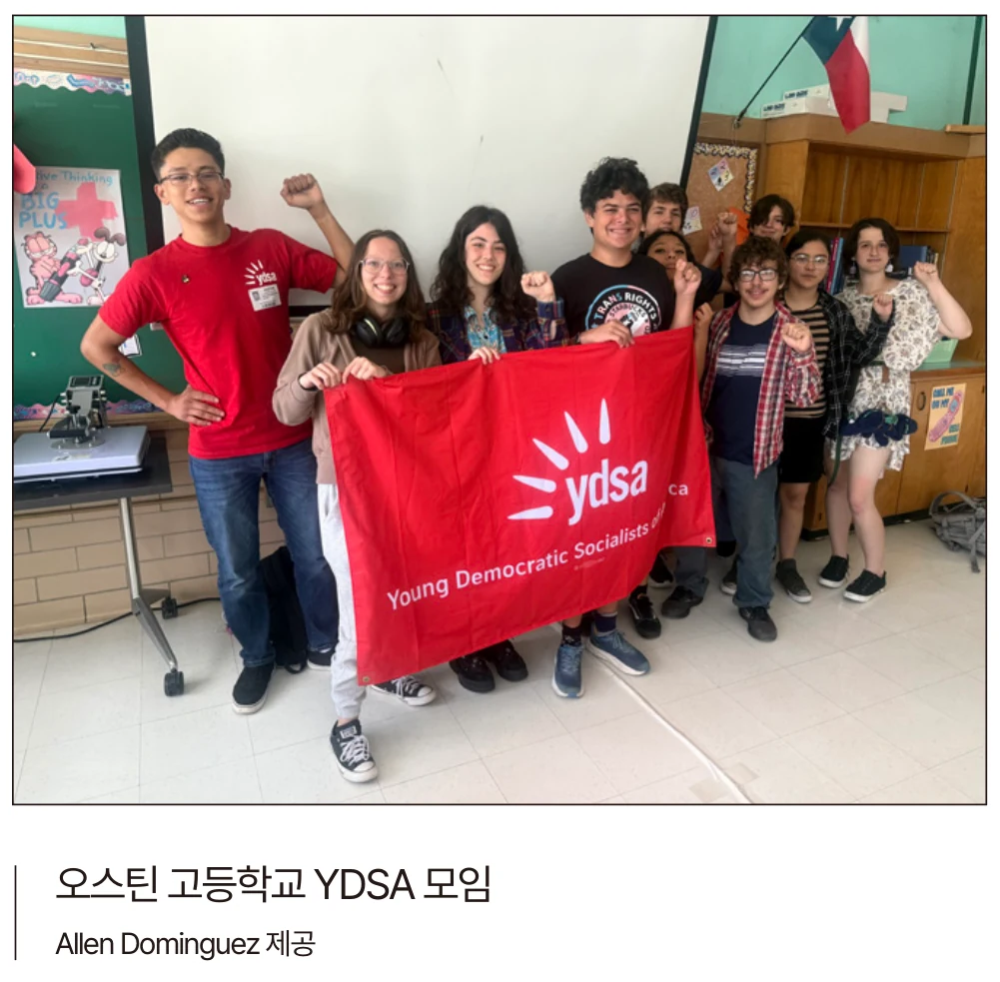
저희가 조직을 배우고 가르치는 방식은 노동활동가 제인 매컬리비(Jane McAlevey)의 책 『지름길은 없다』(No Shortcuts: Organizing for Power in the New Gilded Age)에서 많은 영향을 받았습니다.
학생노동자3들과 함께 임금 인상을 요구하다
Q. 학생들의 경제적 어려움을 공동의 행동으로 연결한 사례가 있나요?
A. 2022~2023년 학생노동자 ‘임금 인상(Raise the Wage)’ 캠페인을 통해 최저시급을 15달러로 인상할 것을 요구했습니다. 2022년 당시 미국 연방 최저시급은 7.25달러였고, 저는 교내 일자리에서 시급 10달러를 받았습니다.
저희는 학생노동자들의 일터를 직접 찾아가 이야기를 나누고, 노동 여건에 대한 온라인 설문조사에 참여해 줄 것을 호소했습니다. 공개 간담회에서는 학생노동자들이 직접 고충을 털어놓고 어떻게 함께 행동할지 토론하고, 캠페인 후반에는 부서별 조직위원회를 꾸렸습니다.
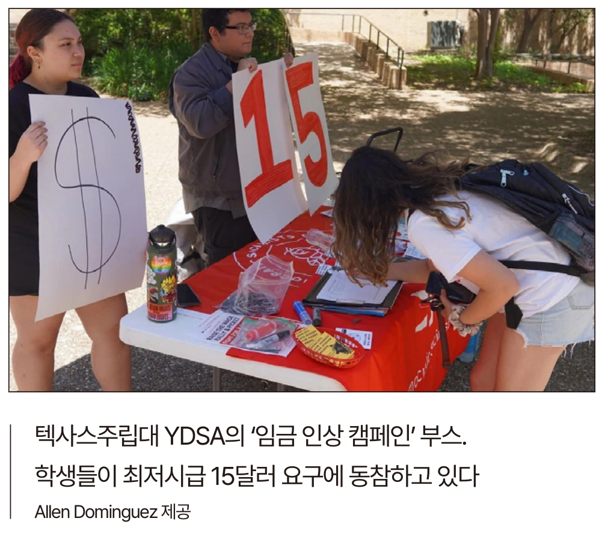
큰 집회도 열었습니다. 총장이 기부자들을 위해 마련한 행사장 밖에서 학생 노동자의 ‘저임금(poverty wage)’을 비판하며 최저시급 15달러 청원에 동참해 달라고 호소하기도 했습니다. 5월 1일 노동절에는 하루에만 600명 넘게 서명했습니다.
이후 텍사스주립대 이사회(Board of Regents)에도 찾아가 저희의 존재를 알리고 임금 인상을 요구했습니다. 1,600개가 넘는 서명을 모아, 청원에 동참한 학생 노동자들과 함께 총장과 공개 면담을 할 수 있었습니다. 면담에서 대학 측은 실질적인 답변을 피했지만, 학기가 끝날 무렵 최소 세 부서에서 학생 노동자의 임금이 오른 것을 확인했습니다.
체계적인 조직 운영
Q. YDSA는 어떤 체계로 운영되나요?
A. YDSA의 지도부는 공동의장(Co-Chair) 2명과 여러 위원회의 위원장으로 구성됩니다. 각 위원회는 정치교육, 노동, 재생산 정의, 상조相助 등의 활동을 담당합니다. 이러한 구조 덕분에 활동 경력이 짧고 나이가 어린 학생들도 공동의장에 출마하기 전에 위원장을 맡아 경험을 쌓을 수 있습니다. 지도부는 매년 선거를 통해 선출됩니다. 의욕 있는 학생에게는 역할을 맡을 기회죠.
YDSA 전국 지도부인 청년조정위원회(Youth Coordinating Committee, YCC)는 운영에 대한 직접적인 멘토링이자 지원을 합니다. YCC는 전국의 지부들을 담당 구역으로 나누어 맡아, 각 위원이 해당 구역 지부들을 지원합니다. 저는 지난해 YCC에서 활동하며 텍사스주와 루이지애나주(Louisiana)의 지부를 지원하는 경험을 했습니다. 매우 보람찼습니다. YCC는 각 지부가 구성원들이 절실하게 느끼는 중요한 문제를 다루고, 많은 학생들이 참가할 수 있는 캠페인을 기획합니다. 그리고 조직 공동체를 건강하게 운영 유지하는 것에 중점을 둡니다.
신입 학생들에게 단체의 조직 활동 전반을 소개하는 일대일 면담과 함께, 퇴임하는 의장이나 위원장이 후임자가 새로운 역할에 적응하도록 지도하는 전통도 있습니다. 저희가 작성한 회칙(Constitution)과 지도부 인수인계 문서(Leadership Transition document)를 신임 지도부의 학생들이 참고하고 있습니다.
신념을 이유로 학생과 교수를 탄압하는 대학
Q. 사회주의 활동을 이유로 탄압을 받은 적이 있나요?
A. 2025년, 저희 단체의 지도교수인 톰 올터(Tom E. Alter)가 사회주의적 신념을 이유로 불법 해고되었습니다. 모든 학생단체에는 지도교수가 필요한데, 해당 사건 이후 이 역할을 맡으려는 교수가 거의 없었습니다. 대학의 공식 학생단체 지위를 잃을 수도 있는 상황이었습니다. 텍사스주 공공부문 노동조합의 도움으로 새 지도교수를 구했지만, 올터 교수는 부당해고로 대학과 법적 싸움을 이어가고 있습니다. 텍사스주 곳곳에서 좌파 성향 교수들이 비슷하게 해고되는 일이 벌어졌습니다.
이외에도 대학이 제공하던 테이블의 사용을 취소해 저희가 직접 테이블을 마련하도록 하거나, 신청한 재정 지원을 거부하거나, 저희 시위를 집중적으로 감시하는 등 여러 제재를 겪었습니다.
Q. 이주민 및 팔레스타인과 연대하는 과정에서 어떤 제재를 받았나요?
A. 미국 전역에서 이민세관단속국(ICE)의 단속이 이어지는데, 저희는 교수들을 직접 찾아가 이주민 학생을 지지하는 표지를 연구실 문에 붙여 달라고 부탁했습니다. 대학 당국은 학과장들을 압박해 교수들이 표지를 달지 못하도록 했습니다. 안타깝게도 한 교수는 표지를 내리라는 요구를 거부했다는 이유로 해고되기도 했습니다.
텍사스주에서는 행정명령 GA-44에 따라 대학들이 반유대주의 관련 규정을 강화했고, 이 과정에서 캠퍼스에서 팔레스타인에 연대하는 활동도 반유대주의로 간주돼 제재를 받기도 했습니다.
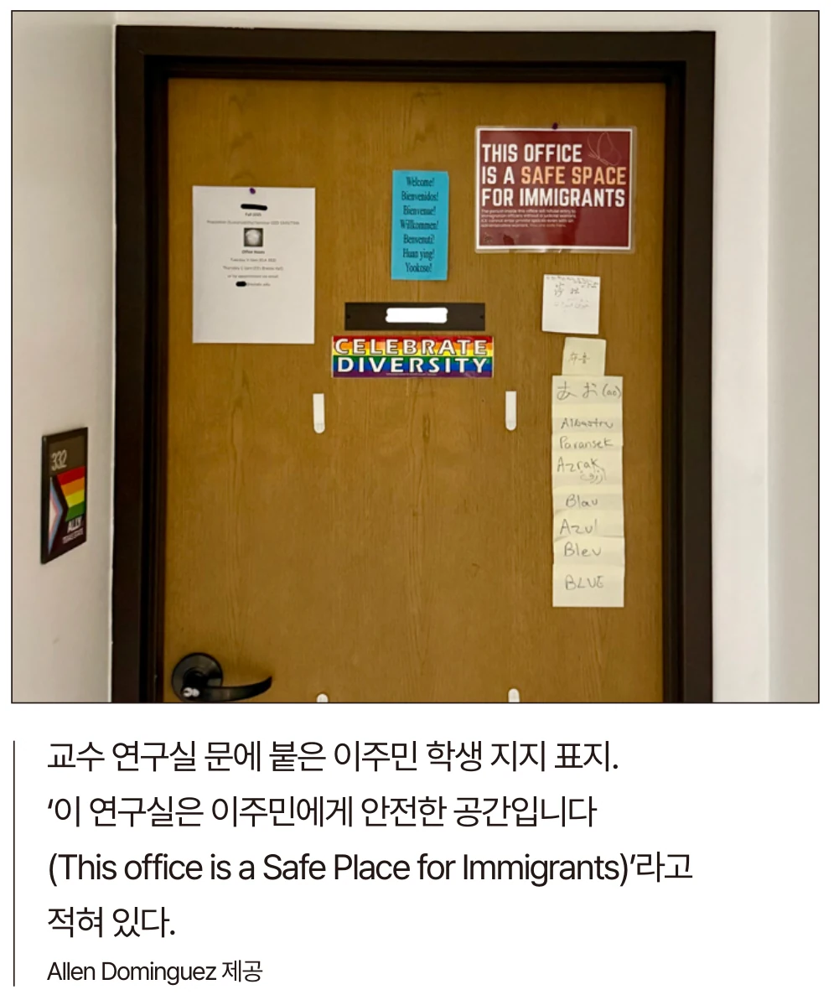
‘이 연구실은 이주민에게 안전한 공간입니다 (This Office is a Safe Place for Immigrants)’라고 적혀 있다.
Allen Dominguez 제공
한계를 넘어, 더 많은 이들과 함께하기 위해
Q. YDSA가 가장 시급하게 풀어야 할 문제는 무엇인가요?
A. 텍사스주립대가 있는 샌마르코스(San Marcos)는 대학도시이기에, 졸업생 대부분이 졸업 후 그 지역에 오래 머물지 않습니다. 텍사스주립대 YDSA는 정식 YDSA 지부가 되기 전, 버니 샌더스(Bernie Sanders)의 2020년 대선 출마를 지지하는 텍사스주립대 학생모임으로 출발했으나 2021년 샌마르코스 DSA가 와해되었습니다. 이후 텍사스주립대 DSA는 몇 년 동안 지역 DSA의 지원 없이 독자적으로 활동했습니다. 현재는 텍사스의 오스틴 DSA의 관할에 속해있습니다. 오스틴 DSA는 재정적인 지원을 제공하지만, DSA는 도시를 기반으로 하기에 캠퍼스 기반의 YDSA에 비해 학생 조직 활동의 경험은 많지 않습니다.
또한 조직과 지도력의 한계에 부딪히고 있습니다. 임금 인상 캠페인 이후 일부 부서에서 학생 노동자의 임금이 올랐으나, 부분적인 성과일 뿐 이후 캠페인에서 성과를 거두지 못하고 있습니다. 저희는 의제를 중심으로 학생들을 모으고, 모인 학생들의 집단적 힘이 대학 당국에 실질적인 압력으로 작용하도록 해야 합니다. 그러나 구체적이고 새로운 방식을 마련하는 데 어려움을 겪고 있습니다. 캠페인은 끝없는 서명 수집으로만 이어지고, 총장은 이를 무시하는 데 익숙해졌습니다.
Q. 한계를 극복하기 위해 어떤 시도를 하고 있나요?
A. 텍사스 전역에서 활동 중인 텍사스 공공부문 노동조합(Texas State Employees Union)과 함께 학생 노동자와 교수, 직원들을 조직해가고 있습니다.
서명 수집 이외의 조직 방식을 발전시켜 학생들이 곧바로 행동에 참여할 수 있도록 해야 합니다. 그래야 학생 활동가들의 자신감과 함께 대학 당국에 대한 압력도 높일 수 있습니다.
학생 노동자들을 직접 찾아가 노동조건에 관해 대화하고 공개 간담회에 초대한 일, 미국 전역에서 이민세관단속국의 단속이 벌어지는 중에도 교수들을 직접 찾아가 이주민 학생에 대한 지지를 공개적으로 표시해 달라고 요청한 활동이 좋은 사례입니다. 아울러 학과나 일터를 기반으로 학생들을 조직한다면, 좌파 성향의 학생활동가들을 넘어 더 많은 학생들의 힘을 모을 수 있으리라 생각합니다.
한국과 미국 청년들의 연대를 그리다
Q. 한국과 미국의 청년·학생들이 어떻게 경험을 나누고 함께할 수 있을까요?
A. 팔레스타인에서 벌어지는 집단학살을 계기로 미국 청년들 사이에서 반전·반제국주의 운동이 시작되고 있습니다. 미국 청년들이 한반도 미군 주둔의 역사와 그 영향을 배우면 큰 도움이 될 것입니다. 또한 미국이 현재 파시즘적 대통령의 통치를 겪고 있는 만큼, 한국의 활동가들에게 2024년 비상계엄을 저지하는 과정과 그 과정에서 어떤 교훈을 얻었는지 배우는 것도 많은 도움이 될 것입니다. YDSA의 청년국제위원회(Youth International Committee)와 한국의 청년·학생 활동가들의 온라인 모임을 통해 이러한 정치교육을 이어가면 좋겠습니다.
또한 YDSA는 매년 전국 대회(Convention)를 개최합니다. 각 지부에서 선출된 대의원들은 조직 운영과 정책, 전국 지도부 인선을 논의합니다. 이 대회에 다른 나라의 청년 활동가들을 모시고 있습니다. 작년 대회에는 푸에르토리코의 생태사회주의청년(La Juventud Ecosocialista, La Jeco), 브라질의 준투스(Juntos), 아르헨티나의 야 바스타(Ya Basta), 캐나다 신민주당New Democratic Party, NDP 청년조직, 멕시코 모레나(MORENA) 청년조직에서 학생 활동가를 초청했습니다.
여건이 마련된다면, 다음 대회에 한국 진보당의 학생·청년 활동가를 초청하고 싶습니다. 청년조정위원회나 청년국제위원회의 동지들 또한 협력을 위해 한국에 초청받는다면 기꺼이 응할 것입니다.
정리: 김민지 진보정책연구원 연구부장
2022년 텍사스주립대 입학 후 같은 해 YDSA에 가입했다.YDSA가 주도한 임금 인상(Raise the Wage) 투쟁 이후 지부 공동의장을 역임했고, 2025~2026년 전국 청년조정위원회(National Youth Coordinating Committee, YCC) 위원을 지냈으며, 현재는 오스틴(Austin) DSA 회원으로 활동하고 있다.
차별금지법 제정, 가짜뉴스와 맞서야 : 청년층 인식 조사 분석 결과
2026년 11월 11일, 박주민 의원이 「평등에 관한 법률안」을 대표발의했다. 진보당의 손솔 의원과 조국혁신당 정춘생 의원의 차별금지법안에 이어 22대 국회에서 세 번째로 발의된 포괄적 차별금지 법안이며, 정부여당에서 나온 첫 번째 법안이기도 하다. 차별금지법 제정 논의에 다시 불이 붙고 있다. 이번에야말로 발의를 넘어 제정으로 나아가야 한다. 이를 위해서는 입법을 가로막는 주장과 가짜뉴스가 무엇이며, 시민들이 그 주장을 어떻게 받아들이는지 구체적으로 살펴볼 필요가 있다.
이 글에서 소개하는 자료는 지난 7월 시행한 ‘2030 내셔널어젠다’ 조사의 일부다. 필자는 조사 기획 과정에서 차별금지법에 대한 가짜뉴스 관련 문항을 기획했다. 해당 문항의 조사 및 분석 결과는 그동안 보도자료나 보고서를 통해 공개되지 않았다. 지금의 정치 지형에서 차별금지법 제정운동의 방향을 모색하는 데 도움이 될 것이라 판단하여 여론조사와 심층분석 결과를 함께 소개한다.
다섯 가지 가짜뉴스 주장에 대한 청년의 인식
해당 조사는 진보정책연구원이 의뢰하여 조사기관인 ㈜에스티아이가 2026년 7월 8~12일 전국 만 18~39세 1,000명을 대상으로 실시한 온라인 패널 조사다. 성별·연령별·지역별 가중치를 적용했다. 차별금지법에 관한 다섯 가짜뉴스를 제시하고, 각각을 사실이라고 생각하는지 ‘전혀 아니다’부터 ‘매우 그렇다’까지 4점 척도로 물었다1. 별도로 ‘잘 모르겠다’를 선택할 수 있도록 했다. 이하 ‘사실로 믿는 비율’은 판단유보 응답자를 포함한 전체 또는 각 집단을 분모로, ‘어느 정도 그렇다’와 ‘매우 그렇다’를 합산한 가중 비율이다.
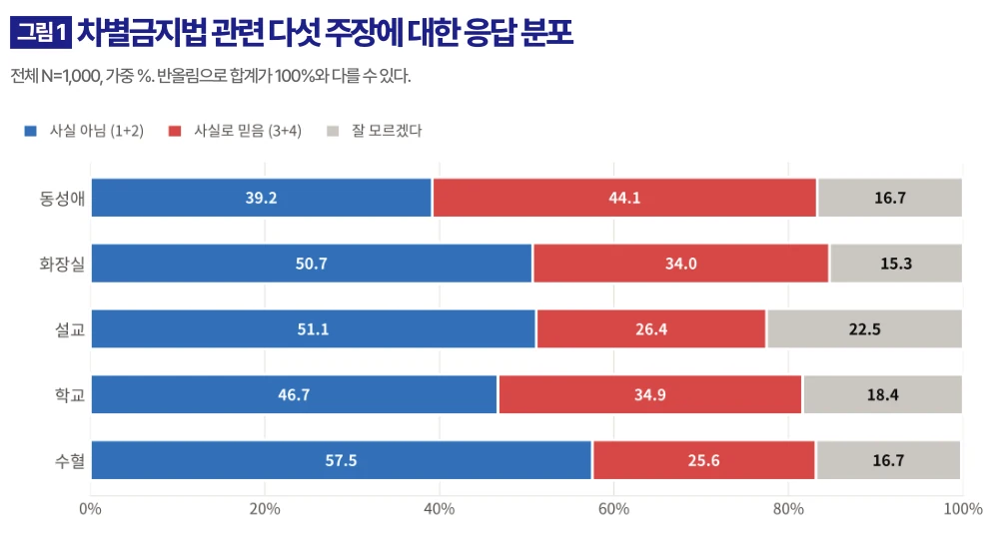
다섯 주장 중 ‘차별금지법이 통과되면 동성애가 확산될 것’이라는 주장을 믿는 비율이 44.1%로 가장 높았다. 성범죄자의 학교 취업 34.9%, 여성 화장실에 남성 출입 34.0%, 목사 설교에 대한 처벌 26.4%, HIV 감염인의 헌혈·수혈 25.6%가 뒤를 이었다. 법의 내용과 무관하거나 그 효과를 왜곡한 주장이 적지 않은 청년에게 사실로 받아들여지고 있었다.
차별을 조장하고 공포를 부추기는 ‘가짜뉴스’
조사에서 제시한 가짜뉴스에는 법 제정 이후의 변화를 막연하게 예측하는 주장도 있고, 법이 특정 행위를 허용하거나 금지한다고 단정하는 주장도 있다. 이 글에서는 이를 ‘가짜뉴스’로 묶어 부르며, 먼저 각 주장에 대한 사실관계를 확인해보고자 한다.
첫째, “차별금지법이 통과되면 동성애가 확산될 것이다.” 차별금지법은 성적지향을 이유로 고용이나 교육 등에서 불이익을 주지 못하도록 하는 법이다. 차별로부터 보호받는다는 것과 누군가의 성적지향이 바뀐다는 것은 별개의 문제다. 법 제정으로 동성애가 확산된다는 인과관계는 어떤 근거로도 뒷받침되지 않는다. 해외 사례, 가령 영국에서 평등법의 제정과 시행 이후 성소수자 인구 통계가 늘어난 것은 사실이나 이는 소수자들이 자신들의 정체성을 당당하게 밝히기 시작했기 때문이다2.
둘째, “차별금지법이 통과되면 여성 화장실에 남성이 들어올 수 있게 된다.” 성별정체성에 따른 차별금지를 누구나 여성 화장실에 들어갈 권리로 오독하고 바꿔치기하는 주장이다. 차별금지 원칙이 남성의 무제한적인 출입 허용으로 이어지지는 않는다. 시설 이용에서 안전과 사생활을 어떻게 보장할 것인지는 구체적인 상황과 기준을 따져야 한다. 성별정체성에 대한 보호가 성폭력이나 불법촬영을 허용하는 것은 더더욱 아니다.
셋째, “차별금지법 때문에 목사가 설교를 하면 처벌받게 된다.” 국가인권위원회는 예배·미사·법회·전도와 같은 고유한 종교활동은 평등법이 다루는 영역이 아니라고 설명한다3. 박주민 의원도 이번 발의안에 강단의 설교를 규율하는 조항이나 형사처벌 조항이 없다고 밝혔다. 다만 종교적 신념을 갖는 자유와 고용·교육 등에서 타인에게 차별적 불이익을 주는 행위는 구분해야 한다. 종교적 신념을 이유로 누군가를 차별하고 이에 문제 제기한 피해자를 해고·징계 등으로 보복한다면 제재 규정에 따라 책임을 질 수 있다.
넷째, “차별금지법이 통과되면 성범죄자가 초등학교 경비·관리 직원이 되는 것을 막을 수 없다.” 현행 「아동·청소년의 성보호에 관한 법률」 제56조는 법원이 성범죄자의 아동·청소년 관련 기관 취업을 제한할 수 있도록 규정하며, 학교와 사실상 노무 제공도 그 범위에 포함한다4. 차별금지법이 이러한 취업제한 명령을 자동으로 무효화한다는 주장은 근거가 없다.
다섯째, “차별금지법이 통과되면 에이즈 감염인의 헌혈도 그대로 수혈받아야 한다.” 조사 문구의 ‘에이즈 감염인’은 HIV 감염인을 말한다. 「혈액관리법」 제8조는 혈액의 적격 여부 검사와 부적격혈액의 폐기를 규정하고, 시행규칙은 후천성면역결핍증 검사를 명시한다5. HIV 감염인의 인권을 보장한다고 수혈 안전기준이 사라지거나 부적격혈액을 수혈받을 의무가 생기는 것은 아니다.
가짜뉴스에 대한 믿음을 묻는 다섯 문항 간 상관계수는 .51~.68이었고 내적 일관성도 높았다(α=.880, ω=.883). 한 주장을 믿는 사람이 다른 주장도 믿는 경향을 확인한 것이다. 이에 세 문항 이상에 1~4점으로 응답한 844명에 대해, 각 응답자의 문항 점수 평균을 ‘가짜뉴스 믿음 통합지수’로 산출했다. 지수가 높을수록 믿음이 강하고, 평균은 2.19점이었다. ‘잘 모르겠다’는 응답이 3개 이상 문항에선 나타나는 응답자 수는 지수 산출에서 제외하였고, 다섯 문항 모두 판단을 유보한 사람은 89명에 달한다.
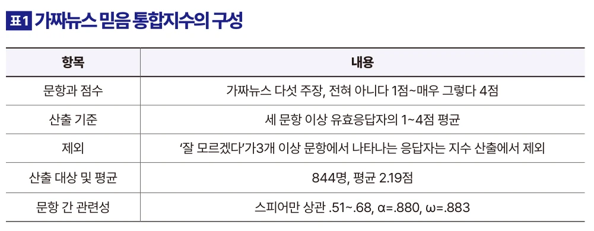
가짜뉴스 인식에 대한 잠재계층 분석
단순 교차분석에서는 보수층이 다섯 주장 모두를 더 많이 믿었다. 동성애 확산 주장을 믿는 비율은 진보 31.4%, 중도 41.2%, 보수 59.8%였다. 그러나 진보층에서도 세 명 중 한 명 가까이가 이 주장을 사실로 받아들였다. 정치성향만으로 사실관계에 대한 이해를 짐작하기 어렵다는 뜻이다. 성별 차이도 문항마다 달랐다. 동성애 확산과 설교 처벌은 남성에서 높았지만, 여성 화장실 문항은 여성에서 조금 높았고 학교 취업 문항은 차이가 거의 없었다.
정치에 관심이 많으면 잘못된 정보를 덜 믿을 것이라는 기대도 들어맞지 않았다. 정치에 ‘매우 관심이 많다’는 집단의 신뢰율이 문항별 38.0~57.3%로 가장 높았다. 정치적 관심의 크기뿐 아니라 어떤 내용을 접하고 누구와 대화하는지를 함께 봐야 한다. 반면 성소수자 지인이 있는 집단은 다섯 주장을 모두 덜 믿었다. 동성애 확산 주장은 지인이 없는 집단에서 45.4%, 있는 집단에서 36.4%였다. 이러한 결과가 인과효과를 입증하는 것은 아니지만, 소수자와 직접 접촉하는 경험을 통해 추상적인 공포가 일부 해소될 수 있음을 짐작할 수 있다.
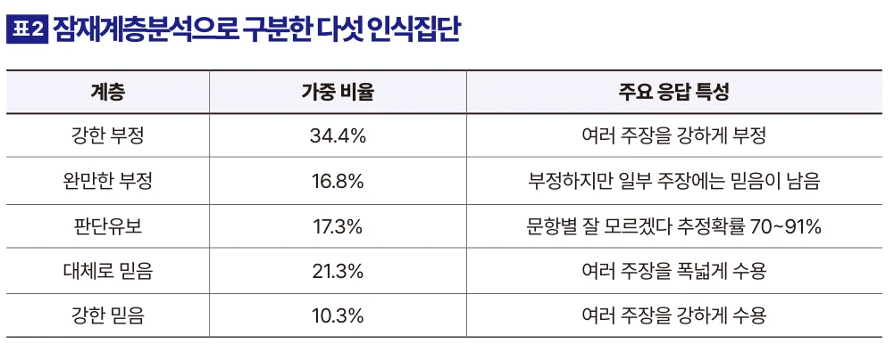
청년의 인식을 찬성과 반대, 가짜뉴스에 대한 믿음과 부정으로만 나누면 차이가 가려진다. 이를 더 자세히 보기 위해 다섯 문항의 응답 조합이 비슷한 사람들을 묶는 잠재계층분석(LCA)을 실시했다. 1~4점 응답뿐 아니라 ‘잘 모르겠다’도 포함하여 전체 1,000명을 분석한 결과, ‘강한 부정’ 34.4%, ‘대체로 믿음’ 21.3%, ‘판단유보’ 17.3%, ‘완만한 부정’ 16.8%, ‘강한 믿음’ 10.3%의 다섯 집단으로 구분되었다. 이는 응답 패턴에 따른 분석적 분류이다.
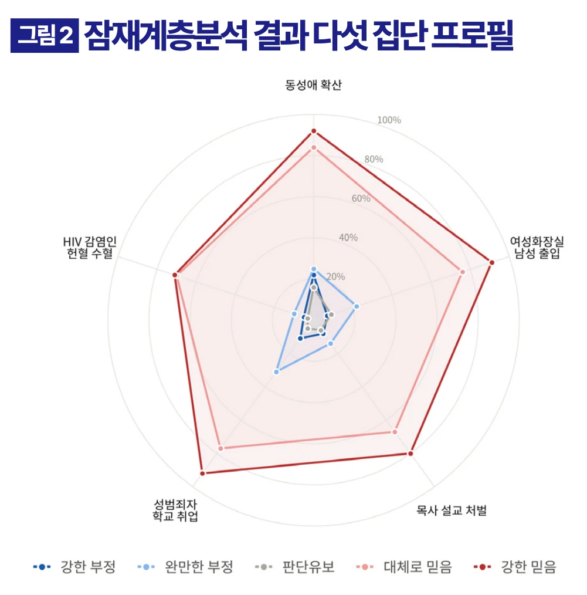
가짜뉴스를 사실이라고 믿는 ‘대체로 믿음’과 ‘강한 믿음’ 집단은 여러 주장을 폭넓게 받아들이지만, 기존 태도와의 결합 정도는 달랐다. 강한 믿음 집단은 대체로 믿음 집단보다 평균 보수성이 높았고(0~10점 기준 6.24점 대 5.49점), 개신교 비율도 높았다(35.9% 대 16.5%). 성소수자 감정온도는 각각 25.2점과 45.5점으로 차이가 컸다. 잘못된 주장을 받아들인다고 해서 비슷한 정치적·감정적 입장에 있는 것은 아니다.
믿지 않는 집단 역시 단일하다고 보기 어려웠다. ‘완만한 부정’과 ‘강한 부정’ 집단 모두 동성애 확산 주장을 믿을 추정확률은 25% 안팎이었다. 그러나 여성 화장실, 학교 취업, 헌혈·수혈 문항에서는 강한 부정 집단의 믿음 확률이 더 낮았다. 성소수자 지인이 있는 비율도 완만한 부정 집단은 14.3%, 강한 부정 집단은 20.6%로 달랐다. 차별금지법에 대한 여러 허위 주장을 부정하는 사람에게도 일부 오해는 남아 있을 수 있다.
또한 주목할 집단은 판단유보형 17.3%다. 이 집단은 문항별로 ‘잘 모르겠다’를 선택할 추정확률이 70~91%였으며, 가짜뉴스에 반대하거나 팩트를 정확히 알고 있는 집단이라고 간주할 수 없다. 다섯 문항 모두 판단을 유보한 89명과도 구분되는 수치다. 분석 결과 이들의 정치관심과 소수자 접촉 경험이 상대적으로 적게 나타났다. 적극적인 반대자를 설득하는 일과, 아직 판단할 정보나 경험이 충분하지 않은 사람에게 설명하는 것은 접근 방식이 달라야 한다.
정보가 전달되는 경로와 이에 따른 가짜뉴스 통합지수 차이
가짜뉴스 주장에 대한 접촉 경로를 확인한 결과, 유튜브 20.1%, SNS 18.6%, 온라인 커뮤니티 17.8% 순이었다(복수응답). 많은 사람들이 온라인 공간에서 가짜뉴스를 접하고 있다. 그런데 해당 주장 접촉 여부에 따른 믿음 수준의 차이는 오히려 가족·지인 대화에서 두드러졌다. 이 경로로 주장을 접한 사람의 통합지수는 2.96점, 접하지 않은 사람은 2.14점이었다. 가족·지인 대화의 접촉률은 5.6%로 온라인 경로보다 낮았지만, 가까운 인적 관계에서 가짜뉴스를 접한 경험이 가짜뉴스 믿음과 관련된다는 점에 주목해야 한다.
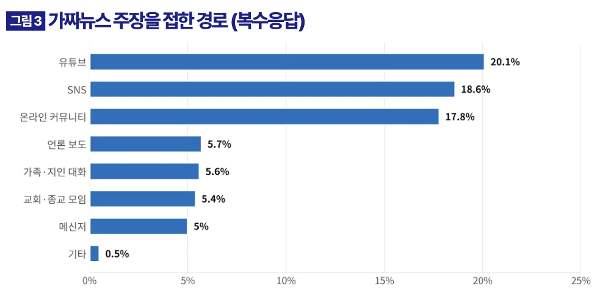
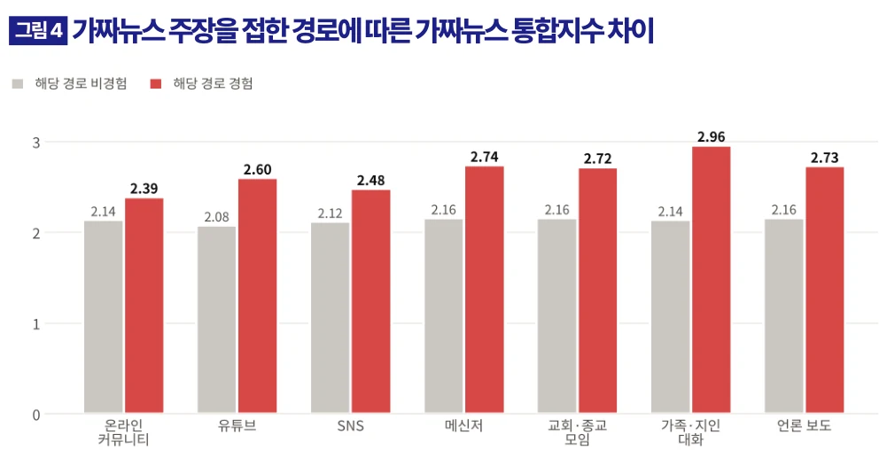
유튜브와 가족 지인을 통한 가짜뉴스 주장 접촉
다른 조건들을 함께 고려해도 이러한 관련성이 나타나는지 가중 선형회귀분석을 실시했다. 동일한 791명을 대상으로 사회인구학적 특성, 정치성향, 정보환경, 종교와 종교성, 관계·대화·갈등 경험을 단계적으로 추가하며 분석했다. 최종 모형의 설명력(R²)은 .292였다. 여러 조건을 통제한 뒤에도 유튜브에서 해당 주장을 접한 경우 접하지 않은 경우보다 통합지수가 .266점, 가족·지인에게서 접한 경우 접하지 않은 경우보다 .407점 높게 추정되었다. 이러한 유튜브와 가족·지인을 통한 주장 접촉의 계수는 통계적으로 유의했다(p<.01)
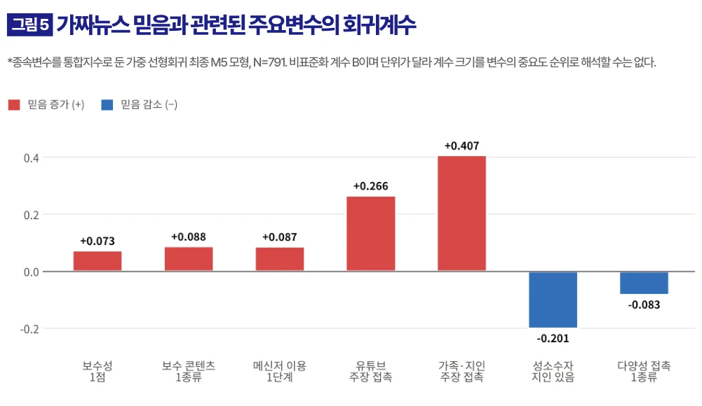
연속적인 조사가 아니라 특정 시점의 횡단조사이므로 유튜브 접촉이나 가족·지인의 주장 접촉, 성소수자 지인의 유무가 가짜뉴스에 대한 인식에 일방적으로 영향을 주었다고는 단정할 수는 없다. 이미 그 주장을 믿는 사람이 관련 콘텐츠를 찾아보거나 비슷한 의견의 사람들과 대화했을 가능성도 있다. 그럼에도 온라인 콘텐츠와 일상 대화가 차별금지법 제정운동에서 중요하게 다뤄야 할 접점이라는 점은 분명하다.
개신교 여부만으로 설명하기 어려운 차별금지법 찬반
종교별 차이는 뚜렷했다. 통제 전 가짜뉴스 믿음 통합지수 평균은 무종교 2.07점, 개신교 2.59점, 천주교 2.31점, 불교 2.32점이었다. 동성애 확산 주장을 믿는 비율은 개신교 63.8%로 무종교 38.3%보다 높았다. 개신교 내부에서도 종교행사 참여, 종교의 중요성, 교리 문자주의, 정치판단에 대한 종교의 영향과 통합지수 간에 양의 상관관계가 나타났다(r=.22~.31). 종교적 믿음이 강하고 이를 정치판단에 반영하는 사람들이 가짜뉴스를 믿는 경향성이 있다는 것이다.
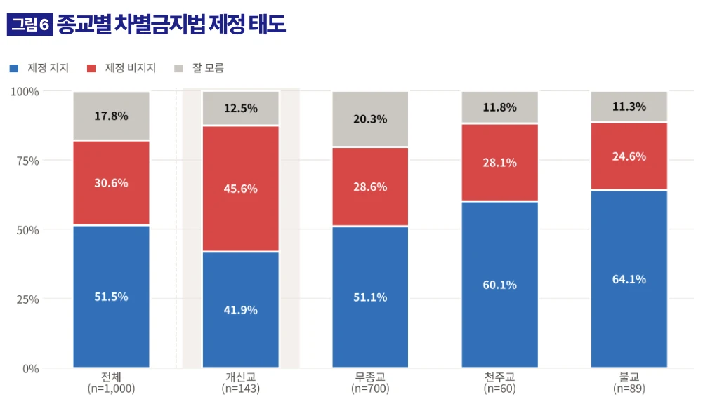
그러나 개신교인을 모두 차별금지법 제정 반대자로 해석해서는 안 된다. 개신교 응답자의 차별금지법 제정 지지는 41.9%, 비지지는 45.6%로 비슷했고, ‘잘 모름’은 12.5%였다. 이러한 개신교 내부의 차이를 지워버리면 함께할 수 있는 사람까지 제정운동 바깥으로 밀어내게 된다.
차별금지법에 대한 찬반을 종속변수로 하는 가중 로지스틱 회귀분석에서도 가짜뉴스 믿음은 일관된 관련성을 보였다. 성소수자 감정온도, 이념과 지지정당, 성별·연령대, 개신교 여부를 함께 고려한 최종 모형에서 통합지수의 승산비는 .623이었다(N=717, 95% 신뢰구간 .510~.761). 가짜뉴스에 대한 믿음 지수가 1점 높을 때 찬성 승산이 약 38% 낮다는 것이다. 같은 모형에서 개신교 여부는 찬성 승산이 낮은 방향이었지만 통계적으로 5% 기준에서 유의하지 않았다(p=.104). 개신교 여부와 차별금지법 찬반 입장이 아무 관련이 없다는 결론을 내거나 두 변수의 영향력 크기를 단정하는 비교를 하는 것은 조심스럽다. 다만 개신교 신자인지 여부를 비롯한 다른 조건들이 같더라도, 가짜뉴스를 사실로 믿는 정도가 높을수록 차별금지법 제정에 찬성할 가능성이 낮게 나타났다는 것이다.
이는 우리가 개신교 내부에서도 구체적인 주장과 오해를 놓고 대화할 필요가 있음을 보여준다. 개신교 안의 제정 지지자들과 함께, 설교가 처벌된다는 주장처럼 신앙생활에 직접 닿는 우려부터 사실이 아님을 해명하고 차별금지법안의 실제 내용에 대한 이해를 높여야 한다.
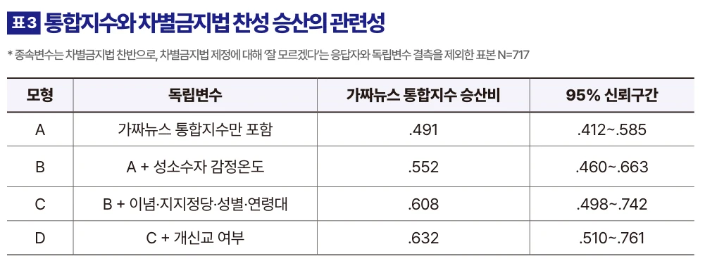
사실을 바로잡고 접촉을 넓히는 차별금지법 제정운동
가짜뉴스를 믿는 사람과 차별금지법을 반대하는 사람이 정확히 겹치는 것은 아니다. 동성애 확산 주장을 ‘어느 정도 사실’이라고 답한 집단에서도 66.1%가 차별금지법 제정에 찬성했고 가짜뉴스 믿음 통합지수가 3.5~4.0점으로 높은 집단에도 찬성자가 28.6% 있었다6. 팩트를 잘못 알고 있으면서도 법을 제정해 차별을 바로잡아야 한다고 생각할 수 있는 것이다. 차별금지법에 대한 찬성 여론을 확인하는 데 그치지 않고, 찬성층 내부의 오해까지 바로잡는 활동이 필요한 이유다.
우선 당원과 지지자 교육에 구체적인 팩트체크를 포함해야 한다. “차별금지법이 필요하다”는 주장만 반복하기보다, 법이 적용되는 영역과 차별 피해를 구제하는 절차를 설명해야 한다. 성범죄자의 취업제한이나 혈액 안전기준이 사라진다는 주장에는 관련 법률을 함께 보여주고, 고유한 종교활동에 대한 자유 보장과 공적 영역의 차별행위를 구분해 설명할 수 있어야 한다. 가짜뉴스 주장을 믿는 사람을 곧바로 비난하기보다 무엇이 걱정되는지 듣고 그 우려에 해당하는 사실을 짚는 대화가 필요하다.
가짜뉴스가 전파되는 유튜브와 SNS에서 쉽게 접할 수 있는 짧은 팩트 설명 영상과 카드뉴스도 중요하고, 그것이 가족과 지인 사이의 대화로 이어질 수 있어야 한다. 이를테면 지역과 일터의 당원들이 질문을 받았을 때 바로 확인할 수 있는 문답, 관련 조항과 실제 차별 사례와 차별금지법이 제정되면 실현될 수 있는 구제 절차를 담은 자료를 마련해야 한다. 지역과 현장에서 가까운 사람들 사이에서 가짜뉴스를 바로잡는 일은 진보당의 구체적인 과제가 될 수 있다.
성소수자의 삶을 접할 기회도 넓혀야 한다. 조사에서 성소수자 지인이 있는 사람들은 가짜뉴스 주장을 덜 믿었고, 다른 조건을 고려한 분석에서도 통합지수가 낮은 경향이 확인되었다. 소수자 당사자에게 커밍아웃이나 해명의 책임을 요구해야 한다는 것은 아니다. 당사자의 의사와 안전을 존중하면서 당원 모임과 교육에서 고용·주거·서비스 이용에서 소수자가 겪는 차별에 대해 일상의 언어로 나눌 수 있어야 한다. 판단유보층에게는 “내가 일터에서 이런 일을 겪는다면 어떻게 보호받을 수 있는가”라는 질문이 더 가까운 출발점이 될 수 있다.
우리가 싸워야 할 대상은 실존하는 어떤 종교나 계층, 집단 그 자체가 아니라 차별을 정당화하고 차별금지법 제정을 가로막는 가짜뉴스다. 차별을 선동하는 행위에 분명히 맞서면서도, 그 주장을 접한 시민과 대화할 가능성은 넓혀야 한다. 진보당의 조직력과 실천력은 지역과 일터의 일상에서 사람들을 만나고 가짜뉴스를 바로잡을 수 있는 힘이다. 법안을 발의하는 정치를 넘어서, 이제는 만나고 설득하며 입법의 책임을 다하는 정치로 나아가야 한다. 그 힘으로 22대 국회에서 차별금지법을 반드시 통과시켜야 한다.
중앙대학교에서 사회학 석사를 마치고 현재는 진보정책연구원에서 연구 중이다. 숫자로 사회의 문제를 드러내고, 데이터와 근거로 사람들을 설득하여 변화를 만들어가고 싶다는 마음으로 연구와 활동을 이어나가고 있다.
당을 바로 세워 14억 대국을 움직인다 : 중국공산당 ‘전면종엄치당 全面從嚴治黨’의 비밀
— 중국공산당 제20기 5중전회 결정문을 통해 본 당 운영 원리와 진보정당의 길—
• 진흙탕에 빠진 자유민주진영의 정당정치, 1억 당원을 하나로 묶어 국가 전략을 관철하는 중국공산당의 ‘치당(治黨)’에서 무엇을 배울 것인가
• 사익과 공천권으로 헤쳐 모이는 붕당(朋黨)의 시대를 넘어, 민주적 숙의와 강력한 실행력이 결합된 현대적 ‘민주집중제’에서 수권 정당의 길을 찾다
진흙탕에 빠진 자유민주진영의 정당정치, 그리고 한 가지 근원적 의문
인구 14억 명, 광활한 대륙과 다양한 민족으로 이루어진 거대한 중국은 지난 수십 년간 인류 역사상 유례없는 급격한 사회·경제적 변화를 겪어왔다. 국내의 대다수 주류 학자들과 언론은 여전히 중국공산당을 ‘인민 위에 군림하는 독재자’이자 ‘전체주의적 국가 운영의 표본’이라는 냉전적 프레임 속에 가두어 설명하곤 한다. 그러나 편견을 잠시 거두고 냉정하게 질문해 보자. 과연 억압과 일방적 독재만으로 14억 인구의 저 거대하고 복잡한 현대 사회가 이토록 역동적으로 굴러가고, 첨단 기술 혁명과 산업 변혁의 최전선에서 국가적 전략 목표를 일관되게 관철할 수 있는 것일까?
시선을 돌려 서구 자유민주주의의 본산이라 자처하는 미국의 정치 현실을 마주하면 이 의문은 더욱 짙어진다. 2026년 11월 치러진 미국의 중간선거 결과는 과연 저것이 정상적인 나라인가, 정치를 어떻게 저따위로 할 수 있는가 하는 깊은 탄식을 자아낸다. ‘끝없는 전쟁’을 종식하고 노동자 가정의 생계 부담을 덜어주겠다며 집권했던 트럼프 행정부는 이란에 대한 무모한 군사 행동과 관세 전쟁을 강행하며 연료와 식료품 등 생필품 물가를 폭등시켰고, 부패한 기득권을 몰아내겠다던 백악관은 도리어 국가 시스템을 사익 추구의 도구로 전락시켰다. 선거 공학에 매몰된 공화·민주 양당은 시급한 구조 개혁을 외면한 채 막대한 공공 자원을 당파 싸움에 탕진하고 있다. 유권자 4분의 3이 국정 방향에 절망하는 가운데 의회 권력이 재편되었지만, 돌아온 것은 일상화된 거부권 정치와 주기적인 국정 마비, 그리고 다음 선거만을 노린 극단적 대립뿐이다. 자본주의 양당제가 지닌 제도적 모순이 민생의 파탄과 국정 운영의 불능으로 고스란히 표출되고 있는 것이다.
우리나라의 정당정치 현실은 더더욱 참담하다. 더불어민주당과 국민의힘이라는 거대 양당의 당 운영 실태를 들여다보면 가히 현대판 붕당(朋黨) 정치의 민낯을 보는 듯하다. 국민의 삶을 바꾸는 정책 경쟁 대신 날 선 당파 투쟁과 반대파 제명이 난무하고, 헌정 질서를 유린한 내란을 옹호하는 세력이 버젓이 활보하는가 하면, 신천지 등 특정 종교집단과의 기괴한 유착 논란과 이중당적 문제까지 끊이지 않는다. 정당으로서 마땅히 지녀야 할 뚜렷한 이념이나 시대적 철학 없이 표류하다가, 선거철만 되면 오직 ‘공천권’이라는 사적 이익을 둘러싸고 헤쳐 모이기를 반복한다. 사정이 이러하니 2030 청년 세대가 정당정치에 환멸을 느끼며 거리를 두고, 기성 정당들이 국민으로부터 외면받는 것은 너무도 당연한 귀결이다. 나아가 정당이 민주주의의 보루로서 제 기능을 상실한 채 사익 추구의 진흙탕 속에서 허우적대고 있으니, 역사적으로 이미 심판받았어야 할 내란 세력이 좀비처럼 자꾸만 재활하여 고개를 드는 것이다.
소위 자유민주진영의 정당정치가 이처럼 방향타를 잃고 표류할 때, 1억명에 육박하는 당원과 540만 개의 풀뿌리 당 조직을 통해 14억 인민을 이끄는 중국공산당은 도대체 어떤 원리로 당을 운영하고 다스리는지 궁금해지지 않을 수 없다. 마침 중국공산당 창당 105주년을 맞은 2026년 10월 26일부터 29일까지 베이징에서 열린 제20기 중앙위원회 제5차 전체회의(이하 ‘20기 5중전회’)는 이 질문에 대한 가장 생생하고 정밀한 해답을 제공한다. 이 회의에서 채택된 「당의 전면적이고 엄격한 통치를 지속적으로 추진하기 위한 몇 가지 주요 사안에 관한 중국공산당 중앙위원회 결정」(이하 ‘결정문’)과 시진핑 총서기가 직접 작성·발표한 해설문은 거대한 중국을 움직이는 심장부의 작동 원리를 적나라하게 보여준다.
물론 국내에서는 보수·진보 언론을 막론하고 국책 연구기관의 전문가들조차 이번 20기 5중전회 결정문을 내년 제21차 당대회에서 시진핑의 4연임을 확정 짓기 위한 ‘사전 정지 작업’이나 ‘권력 공고화 포석’으로 해석하는 시각이 지배적이다.1 예컨대 통일연구원 보고서는 장유샤 전 군사위 부주석과 류전리 전 연합참모장을 포함해 개혁개방 이후 단일 전체회의 최대 규모인 33명의 당적 박탈을 지목하며, 이번 결정문이 파벌 형성을 금하고 “각급 ‘일인자’(최고책임자)를 겨냥한 조항”으로 하부 권력의 사적 영지화를 제약하는 한편, “’두 개의 확립’의 결정적 의의와 시진핑의 ‘핵심’ 지위 수호를 충성 교육의 첫 항목에 두었다”는 점에 주목한다. 반부패 숙청을 상시화하고 ‘제2의 권력 중심’을 차단해 시진핑 1인의 권력을 극대화했다는 분석이다. 2
물론 군 수뇌부 숙청과 시진핑으로의 권력 집중은 부인할 수 없는 사실이다. 하지만 누가 축출되고 누구의 권력이 강화되었는가 하는 ‘인물 중심의 권력투쟁 프레임’에만 시선을 가두면, 정작 1억 명의 당원과 관료 조직을 움직여 14억 대국의 국정 동력을 만들어내는 ‘제도적·조직적 당 운영 원리’는 보이지 않게 된다. 거대 정당의 작동 원리를 규명하려는 관점에서 볼 때, 개별 인사의 부침에 매달리는 것은 오히려 문제의 본질을 흐리는 일이다. 따라서 이 글은 권력 공고화라는 현실적 맥락을 전제하되, 권력 구도 분석을 넘어 결정문 텍스트 자체에 응축된 중국공산당의 당 운영 메커니즘을 내재적으로 들여다보고자 한다.
역사주기율을 넘어서는 두 개의 해답: 왜 지금 다시 ‘전면종엄치당’인가
이번 20기 5중전회 결정문을 관통하는 대명제는 “국가를 다스리려면 먼저 당을 다스려야 하고(治國必先治黨), 당을 다스리려면 엄격한 규율이 필요하며(治黨務必從嚴), 당이 강해야만 국가가 강해질 수 있다”는 것이다. 시진핑 총서기는 결정문 해설의 첫머리에서 왜 창당 105주년이라는 역사적 분기점에 ‘당의 전면적이고 엄격한 통치(全面從嚴治黨, 전면종엄치당)’를 본회의의 핵심 의제로 삼았는지 세 가지 필연적 요구로 나누어 설명한다.
가장 먼저 꼽힌 첫 번째 이유는 당의 선진성과 순수성을 유지하고 장기 집권 기반을 공고히 하기 위함이다. 여기서 시진핑은 중국 정치사를 관통하는 가장 근원적인 화두인 ‘역사주기율(歷史周期率)’을 정면으로 호출한다.3
“흥망성쇠의 역사적 순환에서 벗어나는 것은 우리 당이 장기적인 통치 과정에서 반드시 잘 답해야 할 근본적인 문제입니다. 이와 관련하여 마오쩌둥 동지는 옌안의 동굴 거처에서 ‘인민이 정부를 감시하게 하라’는 첫 번째 해답을 제시했습니다. 제18차 전국대표대회 이후 우리는 당을 전면적이고 엄격하게 통치하는 실천 속에서 두 번째 해답인 ‘자정비’를 찾았습니다.” (시진핑, 「당의 전면적이고 엄격한 통치를 지속적으로 추진하기 위한 몇 가지 주요 사안에 대한 중국 공산당 중앙위원회 결정 해설」, 《구시(Qiushi)》 2026년 제21호, 이하 출처 동일)
주지하듯 1945년 7월, 항일전쟁 승리를 앞둔 옌안(延安)의 토굴 거처에서 민주인사 황옌페이(黃炎培)는 역대 왕조들이 초기에는 긴장하여 흥성하다가도 권력을 잡은 뒤에는 나태해져 부패하고 몰락하는 ‘흥망성쇠의 주기율’을 공산당은 어떻게 벗어날 수 있는지 물었다. 이에 마오쩌둥은 신화통신 등 공식 당사 문헌에 기록된 유명한 ‘요동지문(窯洞之問)’의 답변을 내놓았다.4 외부 요인인 ‘인민의 감시’를 통해 권력의 부패를 막겠다는 것이 마오쩌둥이 찾은 첫 번째 해답이었다면, 집권 70여 년을 넘긴 시진핑 시대의 중국공산당이 찾아낸 두 번째 해답은 칼날을 자기 안으로 돌려 스스로 살을 도려내는 내부적 동력, 즉 ‘자기혁명(自我革命, 자정비)’이다.
오늘날 중국공산당은 개혁개방 이후 출생한 젊은 당원과 간부의 비율이 급증하는 세대적·구조적 변화를 겪고 있다.5 평화와 집권의 시기가 길어질수록 당원들이 안일함과 출세욕에 빠져 사상과 조직, 일하는 방식이 변질되는 위험도 함께 커진다. 시진핑은 이 지점을 냉철하게 직시하며 “당의 전면적이고 엄격한 통치를 꾸준히 추진하고 당의 건전한 몸을 좀먹는 바이러스를 끊임없이 제거함으로써만 당의 본질과 색깔, 맛을 결코 바꾸지 않고 붉은 체제를 세대에서 세대로 계승할 수 있을 것입니다”라고 단언한다.
두 번째와 세 번째 요구는 전당의 단결과 당·군·민의 결속을 공고히 하고, 중국식 현대화를 통한 민족 부흥의 역사적 사명을 완수하는 데 있다. 사실 시진핑이 집권하기 직전인 2012년 제18차 당대회 무렵만 해도 중국공산당은 심각한 내부 위기에 직면해 있었다. 시진핑 자신의 회고대로 당시 당 중앙은 “약화되고 피상적이며 희석된 당 영도, 허술하고 비효율적인 당 통치, 그리고 당 내부의 심각한 문제라는 암울한 현실에 직면”해 있었다. 이를 타개하기 위해 중국공산당은 이른바 ‘중앙 8항 규정’을 돌파구로 삼아 식탁 위의 호화 만찬과 낭비, 관용차 사적 유용, 유흥업소 출입과 관료적 형식주의를 뿌리 뽑고, 성역 없는 반부패 투쟁을 전개하여 당의 기강을 근본적으로 바로잡았다. 나아가 100년 만의 세계적 격변과 미·중 전략 경쟁, 국내의 불균형·불충분 발전이라는 복합 위기를 돌파하기 위해, 마오쩌둥의 ‘두 가지 필수 원칙(兩個務必)’을 계승한 ‘세 가지 필수 원칙(三個務必)’을 내걸고 당 운영의 고삐를 다시금 죄고 있는 것이다.6
시진핑은 이를 두고 “중국 국정을 잘 운영하는 열쇠는 당에 있으며, 그 열쇠는 당 기율을 전면적으로 강화하는 데 있다”고 못 박는다. 여기서 중국공산당 문헌에 반복 등장하는 ‘기율(紀律)’이란 단순히 지켜야 할 개별 규칙이나 본보기를 뜻하는 한국어의 ‘규율(規律)’을 넘어, 거대 조직 전체를 지탱하는 기강이자 도덕적·정치적 질서를 포괄하는 개념이다. 아래에서는 현대 한국어 독자들의 이해를 돕기 위해 고유명사나 직접 인용문을 제외하고는 이를 주로 ‘규율’과 ‘기강’으로 옮겨 서술하겠지만, 그 본질은 집권당 내부의 추상같은 조직 질서에 국가의 명운이 달려 있다는 절박한 인식에 맞닿아 있다.
결정문 탄생의 숙의 프로세스와 당 운영의 7대 기둥
외부 관찰자들은 흔히 중국공산당의 주요 결정이 최고 지도자 1인의 하향식 명령으로만 만들어질 것이라 짐작하지만, 이번 결정문의 성안 과정은 치밀한 조사 연구와 당내외의 광범위한 의견 수렴이 어떻게 결합되는지 잘 보여준다. 2026년 1월, 시진핑 총서기가 직접 팀장을 맡고 왕후닝, 차이치, 리시 상무위원이 부팀장을 맡아 출범한 초안 작성단은 각 지역과 부처의 의견을 수렴하는 동시에 16개 부처에 23개 핵심 과제에 대한 심층 연구를 위임했다. 5월에는 시진핑이 상하이에서 직접 심포지엄을 주재해 지방 주요 간부들의 현장 의견을 청취했고, 8월에는 초안을 배포하여 원로 당원들은 물론 각 민주당파 중앙위원회 지도부와 전국공상연합회, 무당파 인사들의 의견까지 폭넓게 수렴해 반영했다. 중앙의 최상위 청사진(마스터플랜)과 일선 현장의 실천적 탐색, 그리고 통일전선 내의 민주적 숙의가 맞물려 돌아간 것이다.
이렇게 완성된 결정문은 총 3개 부문, 세부적으로는 8개 부(部)와 감독·책임 조항으로 정교하게 직조되어 있다. 시진핑은 결정문 작성 과정에서 ‘신시대 당 건설 사상의 관철’, ‘당의 사명과 과업 수행’, ‘엄격한 자세 견지’, ‘문제 중심적 접근’, ‘체계적(시스템적) 관점 강화’라는 5대 원칙을 관철했다고 밝히는데, 특히 눈길을 끄는 대목은 엄격한 규율과 자율적 활력의 변증법적 조화다.
“당을 전면적이고 엄격하게 통치하는 핵심은 엄격함에 있으며, 이 목표를 흔들림 없이 추진하기 위해서는 일관되고 철저한 시행이 필수적입니다. ... 동시에, 엄격한 관리와 보살핌, 그리고 인센티브와 제약의 균형을 유지함으로써 엄격함과 제약이 존재하는 동시에 당 전체의 열정, 주도성, 창의성을 고취할 수 있도록 했습니다.” (시진핑, 같은 글)
앞서 언급한 『한겨레』 보도나 통일연구원 보고서는 아시아소사이어티의 닐 토머스(Neil Thomas)나 우궈광(吳國光) 같은 서구 학자들의 분석을 인용해, 고강도 반부패 사정이 일선 간부들로 하여금 감찰을 피하려고 몸을 사리게 만드는 이른바 ‘복지부동’과 행정의 정체, 즉 ‘독재자의 딜레마’를 낳고 있다고 지적한다. 실제로 강도 높은 사정이 관료 사회의 위축이라는 부작용을 동반한다는 것은 객관적 사실이다. 그러나 결정문 원문을 실증적으로 뜯어보면, 중국공산당 지도부야말로 그러한 관료적 보신주의의 병폐를 누구보다 정확히 간파하고 이에 대한 제도적 돌파구를 결정문 안에 정밀하게 설계해 넣었음을 확인할 수 있다.
결정문과 그 후속 조치들은 권력의 남용뿐만 아니라 ‘책임지지 않고 일하지 않는 복지부동 행태(권력을 사용하지 않거나 포기하는 과실)’ 자체를 중대한 규율 위반으로 규정해 문책하는 한편, 적극 행정을 펼친 간부를 보호하는 면책 장치와 무고나 억울한 누명을 벗겨 명예를 회복시켜 주는 절차를 명문화했다. 나아가 이번 5중전회에서는 알루미늄·철강·금융 등 산업 현장에서 잔뼈가 굵은 1970년대생 실무형 지도자들—이른바 ‘테크노크라트 2.0’—을 대거 중앙위원으로 발탁해 기술 경쟁과 산업정책 집행의 전면에 배치했다. 즉, 사정의 칼날로 부패를 도려내되, 명확한 보호 장치와 인사 인센티브를 결합하여 체제의 행정 효율성이 마비되는 딜레마를 정면으로 돌파하고 있는 것이다. 결정문의 본론에 해당하는 제2부부터 제8부까지의 ‘7대 전략 과제’는 이 유기적 시스템이 구체적으로 어떻게 작동하는지 명징하게 보여준다.
첫째, 공산당원의 정체성(당정신) 강화와 혁신 이론을 통한 사상적 단결(제2부)이다. 시진핑은 제2부에서 “공산당원의 당정신 강화”가 “전폭적이고 엄격한 당 통치의 근본 과제”임을 분명히 하고, “당에 대한 충성 교육 강화, 당의 혁신적인 이론을 활용한 단결과 고무, 당의 훌륭한 전통과 뛰어난 중국 전통 문화를 통한 당정신 함양, 실천을 통한 당정신 단련, 그리고 당정신을 분별하는 능력 강화”라는 다섯 가지 방안을 제시했다. 정당정치학의 관점에서 볼 때, 서구의 선거 전문가 정당이나 한국의 기성 정당들이 선거 국면마다 득표와 공천권을 매개로 이합집산하는 ‘포괄정당’ 내지는 ‘선거 브로커 정당’의 성격을 띤다면, 중국공산당이 지향하는 마르크스주의 정당 모델은 공유된 세계관과 강령적 가치를 조직 결속의 일차적 구심점으로 삼는 ‘이념·가치 기반 결사체’라고 할 수 있다. 1억 명이 넘는 거대 정당이 사분오열하지 않고 ‘하나의 견고한 강철’로 움직이려면 구성원들의 내면적 가치와 사상적 토대가 흔들리지 않아야 한다는 논리다.
여기서 매우 흥미로운 지점은 마르크스주의의 기본 원리를 중국의 구체적 현실 및 중화 우수 전통문화와 접목하는 이른바 ‘두 가지 결합’이다. 중국공산당은 마르크스주의적 세계관에 “도가 행해지면 천하가 모두의 것이 된다(大道之行也, 天下爲公)”는 대동(大同) 사상, “세상의 근심을 먼저 근심하고 세상의 즐거움을 나중에 누린다(先憂後樂)”는 사명감, 사익보다 공익과 정의를 앞세우는 가치관, 그리고 홀로 있을 때도 삼가고 하루 세 번 자신을 돌아보는 전통적 수양론을 결합하여 당원의 도덕성과 정체성을 단련한다. 또한 원전을 읽고 원리를 깨우치는 학습에 머물지 않고, 민생의 시급한 문제와 질적 발전의 난제를 해결하는 현장 중심의 실용적·실사구시적 학습을 강조하며, 최근에는 인터넷과 인공지능(AI) 기술까지 당원 교육 시스템에 적극 도입해 이론 무장의 실효성을 높이고 있다.
둘째, 민주적 중앙집권제(민주집중제)의 엄격한 시행(제3부)이다.7 시진핑은 제3부에서 민주집중제가 당 통치의 필수 요건임을 강조하며 “당 중앙위원회의 중앙집권적이고 통일된 영도 수호 및 강화, 당내 민주주의의 질적 향상, 지도부 기구의 의사결정 및 심의 규칙 엄격하게 시행, 그리고 최고 지도부의 권력 행사 및 수행 표준화”라는 네 가지 실행 방안을 제시한다. 이를 통해 각급 조직의 ‘일인자(최고 책임자)’가 회의에서 가장 마지막에 발언하도록 의무화하고, 하급 조직에 일인자 개인의 권위를 옹호하도록 강요하지 못하게 하며, 자신이 맡은 부처나 지역을 ‘사적인 영지’로 삼지 못하도록 엄격한 족쇄를 채웠다.
결정문이 각급 ‘일인자’의 권한을 제약하면서도 시진핑의 ‘핵심’ 지위 수호(두 개의 확립)를 강조한 것을 두고, 국내에서는 이는 집단지도의 복원이 아니라 지방·부문·군에 ‘제2의 권력 중심’이 생기는 것을 막고 권위를 시진핑 한 사람에게 모으는 피라미드식 통제 장치라고 비판적으로 해석한다.8 물론 거시적 권력 구조의 측면에서 중앙의 권위를 정점으로 집중시키는 효과가 있다는 점은 분명하다. 그러나 이러한 해석은 중국의 일상적 국가 행정과 당 조직 운영에서 오랫동안 가장 심각한 암초로 작용해 온 ‘토황제(土皇帝·지역 및 부처의 소황제) 현상’을 간과한 일면적 평가다. 광활한 중국에서 각 성·시·현의 당 서기나 국유기업·군부의 최고 책임자들이 인사권과 재정권을 독점한 채 관할 구역을 ‘사적인 영지’로 만들고 파벌을 형성해 중앙의 정책을 왜곡하는 병폐는 중국 통치 체제의 고질적 난제였다. 따라서 각급 일인자의 선제적 가이드라인 제시를 금지하고(말미 발언제) 권한 행사를 표준화된 규칙 안에 가둔 조치는, 실제 조직 운영의 차원에서는 수천 개 지방·부문 권력자들의 제왕적 독단과 파벌 형성을 해체하고 각급 당 위원회 내부의 집단적·민주적 심의를 강제하는 핵심적인 제도적 안전판으로 기능한다.
셋째, 민족 부흥의 중책을 감당할 고품질 간부팀 구축(제4부)과 상하가 긴밀히 연동되는 조직 체계 구축(제5부)이다. 시진핑은 제4부에서 “당을 전면적이고 엄격하게 통치하는 핵심은 간부들을 엄격하게 통치하는 데 있음”을 역설하며 “올바른 인재 선발 방향 준수, 정확하고 과학적인 인재 선발 및 임명, 간부들의 올바른 직무관 확립 및 실천 장려, 간부들의 직무 수행 및 창업 능력 향상, 우수 청년 간부 육성 및 선발의 질 향상, 그리고 간부 관리 및 감독 강화”를 배치했다. 중국에서는 흔히 “덕성과 재능을 모두 갖춘 자는 진품이요, 재능은 있으나 덕성이 없는 자는 독(毒)이다”라고 말한다. 사익과 파벌을 추구하거나 보여주기식 치적에 매몰되는 왜곡된 성과관을 바로잡고, 인민을 위한 실질적 성과를 내는 유능하고 청렴한 간부를 길러내는 데 사활을 걸고 있는 것이다. 아울러 제5부에서는 중앙 및 국가 기관의 모범적 역할부터 지방 당 위원회, 풀뿌리 당 조직, 그리고 플랫폼 경제 등 신흥 분야의 당 건설까지 촘촘히 연결하여, 마치 두뇌가 신체의 팔과 손가락을 움직이듯 중앙의 결정이 일선 현장의 ‘마지막 단계(마지막 1킬로미터)’까지 막힘없이 관철되는 조직 체계를 구축하도록 규정했다.
넷째, 업무 태도 교정과 규율 강화(제6부), 그리고 ‘3불(三不) 부패’의 일체화 추진(제7부)이다. 제6부가 당의 대중 노선과 중앙 8항 규정 정신을 상시화하여 관료주의와 형식주의 등 ‘네 가지 바람직하지 못한 업무 방식’의 뿌리를 뽑는 데 초점을 맞춘다면, 제7부는 시진핑 시대 반부패 전략의 결정판이라 할 수 있는 “부패하지 않겠다는 용기(감히 부패하지 못함), 부패할 수 없다는 마음(부패할 수 없음), 그리고 부패하고 싶지 않다는 마음(부패하고 싶지 않음)을 통합적으로 추구하는 방식”을 다룬다. 이는 강력한 적발과 엄벌을 통해 부패할 엄두를 내지 못하게 하고, 빈틈없는 제도적 견제와 감독으로 부패할 물리적 공간을 차단하며, 정체성 교육과 청렴 문화로 부패하려는 내면의 욕망 자체를 정화하는 세 가지 고리를 하나의 유기적 메커니즘으로 묶어낸 것이다.
다섯째, 제도의 틀 안에 권력을 가두는 당내 법치주의(제8부)와 촘촘한 책임의 사슬(제3부문)이다. 시진핑은 제8부 “당 통치에 있어 법치주의 수호”에서 당 규정 및 제도의 구축이 장기적이고 근본적인 전략임을 명시하고, “당 규정 및 제도의 체계 개선, 규정 집행 강화, 그리고 암묵적인 규칙의 적극적인 근절”을 지시했다. 이는 문화대혁명 시기의 개인숭배와 무법적 혼란을 뼈저리게 성찰하며 덩샤오핑이 정립한 ‘제도 건설’ 노선의 역사적 연장선에 서 있다.9 공권력이 존재하는 한 반드시 견제와 균형이 있어야 하며, 권력을 과학적인 제도의 틀 안에 가두지 않으면 필연적으로 남용된다는 인식이다.
이를 위해 결정문과 당 이론가들은 권력의 경계와 책임 범위를 당헌·당규 및 법률로 명확히 획정하고, 제도가 ‘종이호랑이’나 마음대로 늘어나는 ‘고무줄’로 전락하지 않도록 예외 없는 집행력을 부여할 것을 강조한다. 특히 주목할 만한 것은 “투명성이 최고의 감시 수단”이라는 원칙 아래 권력을 투명한 ‘햇빛’ 아래에서 작동하게 만들어, 막후의 연줄이나 파벌 거래 같은 ‘음성적 관행(암묵적인 규칙)’이 발붙일 시장을 완전히 없애버리겠다는 구상이다. 나아가 결정문의 마지막 세 번째 부문에서는 당과 국가의 감독 체계를 개선하고, 당 위원회의 일차적 책임, 기율검사위원회의 감독 책임, 당 서기의 제1책임, 지도부 구성원의 ‘이중 책임(고유 업무와 부패 방지 책임을 함께 지는 것)’으로 이어지는 책임 사슬을 촘촘히 묶어 “모두가 책임지지만 실제로는 아무도 책임지지 않는” 관료적 무책임을 원천 봉쇄하고 있다.
체제의 차이를 넘어선 성찰: 진화한 ‘민주집중제’와 우리 정당정치에 던지는 화두
물론 중국과 대한민국은 역사적 경로도, 헌정 체제와 정당 제도도 판이하게 다르다. 중국공산당의 배타적 영도(일당 지배)가 헌법으로 보장된 중국의 정치 체제와, 복수정당 간의 선거 경쟁을 통해 정권이 교체되는 한국의 정당정치는 작동하는 무대 자체가 다르다. 따라서 중국공산당의 당 운영 방식을 우리 현실에 무비판적으로 수용하거나 기계적으로 이식할 수 없다는 점은 두말할 나위가 없다.
하지만 ‘자유민주주의’라는 간판 아래 이념도 철학도 없이 공천권 다툼과 팬덤 정치, 당파적 이전투구로 날을 지새우는 한국 기성 정당들의 참담한 실패 앞에서, 1억 당원을 응집시켜 국가적 장기 전략을 관철해 내는 중국공산당의 운영 원리는 우리에게 묵직한 성찰의 거울을 제공한다. 더구나 기성 양당 체제를 넘어 새로운 사회를 열겠다는 진보정당 운동의 관점에서 볼 때, 과연 우리의 정당들은 시대를 선도할 깊은 이론적 역량과 치열한 당내 토론 문화, 아래로부터 현장의 목소리를 모아내는 수렴 구조, 정파적 이해관계를 넘어서는 단결력과 지도부의 확고한 권위를 제대로 갖추고 있는지 스스로에게 뼈아프게 묻지 않을 수 없다.
이 총체적 과제를 성찰함에 있어 우리가 중국공산당의 경험에서 가장 깊이 주목하고 재해석해야 할 대목은 바로 ‘민주적 중앙집권제(민주집중제)’에 대한 원칙적 계승과 현대적 발전·풍부화다. 과거 냉전기나 교조적 운동권 담론 속에서 흔히 떠올리던 마르크스-레닌주의 혹은 스탈린주의 식의 민주집중제는 대개 ‘민주’보다 ‘집중’에 방점이 찍힌 채, 상부의 지시를 하부에 일방적으로 하달하고 이견을 억압하는 경직된 병영적 조직 원리로 작동하거나 왜곡되곤 했다. 그러나 마오쩌둥이 정식화하여 중국공산당 당헌(당장)에 명문화한 민주집중제의 이상은 본래 규율과 자유, 통일된 의지와 개인의 생동감이 조화를 이루는 정치 국면이었다.10 나아가 이번 20기 5중전회 결정문과 관련 후속 논의들이 보여주는 오늘날 중국공산당의 민주집중제는 과거의 거칠고 권위주의적인 형태를 넘어, 현실에 단단히 발을 딛고 당내 민주주의와 과학적 의사결정, 제도적 견제와 효율적 집행을 결합한 고도로 정교한 시스템으로 진화해 있다.
구체적으로 살펴보자. 오늘날 이들이 시행하는 민주집중제는 주요 사안에 대한 결정을 내리기 전에 공론화, 전문가 자문, 위험 평가, 합법성 검토, 그리고 집단 토론이라는 다층적 절차를 반드시 거치도록 제도화하고 있다. 특히 조직의 최고 책임자라 할지라도 주관적 독단으로 권한을 휘두르지 못하도록 ‘최고 지도부의 권력 행사 표준화’와 집단 의사결정 규칙을 엄격히 적용하며, 의사결정의 근거와 과정을 투명하게 공개해 권력 남용의 위험을 근원에서 차단한다. 일선 당원들과 현장의 목소리를 샅샅이 수렴하여 ‘민주’의 질을 극대화하되, 일단 치열한 숙의와 과학적 검증을 거쳐 당의 결정이 내려지면 파벌적 이해관계나 지역 이기주의에 흔들리지 않고 1억 명에 달하는 공산당 당원들부터 540만 개 풀뿌리 조직까지 하나의 몸처럼 움직여 끝까지 결과를 만들어내는 ‘올바른 집중’과 ‘강력한 실행력’을 발휘하는 것이다. “계획이 1할이라면 실행이 9할”이라는 명제 아래, 민주적 숙의와 철통같은 실행력을 결합한 이 정교한 운영 원리야말로 14억 대국을 움직이는 진짜 비결이다.
이 지점은 한국 사회의 근본적 변혁과 집권을 모색하는 진보당에 중요한 전략적 시사점을 던진다. “국가를 다스리려면 먼저 당을 잘 다스려야 한다(治國必先治黨)”는 명제는 이미 집권한 정당에만 해당하는 말이 아니다. 장차 국가를 운영하겠다는 집권전략을 세우는 진보정당이라면, 무엇보다 먼저 자기 당을 가장 민주적이면서도 가장 유능하고 규율 있는 정당으로 운영(治黨)해 내는 능력을 입증해야 한다. 거대 양당이 철학 없는 공천 파동과 내란 세력의 준동, 종교 유착과 계파 싸움으로 국민의 신뢰를 잃어갈 때, 진보당이 청년 세대와 일하는 사람들의 마음을 얻어 수권 대안세력으로 도약하기 위해서는 우리 스스로를 돌아보며 다음 네 가지 차원의 근본적 혁신을 일구어내야 한다.
첫째, 당원의 투철한 정체성(세계관) 확립과 ‘문제 해결형 이론 무장’이다. 여기서 말하는 문제 해결형 이론 무장은 과거 소비에트(소련) 관료 체제가 빠졌던 형식주의적 교조주의나, 서구 주류 정당정치와 행정학이 의존하는 탈정치화된 기술관료주의(테크노크라시)와는 근본적으로 궤를 달리한다. 후기 소비에트 체제의 사상 교육이 변화하는 현실 및 대중의 삶과 유리된 채 공인된 교리를 반복 확인하는 것으로 굳어지면서 이론과 행정이 분리되는 결과를 낳았다면, 현대 주류 정책학과 행정은 표면적으로 시민참여나 숙의 거버넌스를 표방하면서도 실제로는 사회 구조적 모순과 일하는 사람들의 정치적 입장을 외면한 채, 첨예한 사회 문제를 계량적 비용·편익 분석이나 가치중립적인 ‘행정 관리와 기술적 처방’의 문제로 환원하는 도구적 합리성에 갇혀 있다. 반면 중국공산당이 마오쩌둥의 정풍운동 이래 정립하고 이번 결정문에서 재확인한 학습 원리는, 세상을 바꾸려는 확고한 세계관(입장·관점·방법)을 견지하면서도 공허한 추상적 담론을 배격하고, 당면한 핵심 모순과 민중의 가장 시급한 삶의 문제에서 출발해 해법을 도출하는 실사구시(實事求是)의 방법론이다.11 진보당 역시 박제된 과거의 이념 구호나 선거철 백화점식 정책 나열을 넘어, 당원과 간부들이 삶의 현장 속으로 깊이 들어가 구체적인 문제를 조사·연구하고 해결하는 과정 자체가 당의 이론적 깊이를 심화시키는 살아있는 학습 메커니즘을 구축해야 한다.
둘째, 정파적 파편화를 넘어선 현대적 민주집중제의 구현이다. 당내 민주주의가 정파 간의 기계적 지분 나눠먹기나 토론의 부실함, 혹은 결론 없이 공전하는 백가쟁명식 논쟁으로 흘러서도 안 되고, 반대로 아래로부터의 의견 수렴 없이 지도부의 방침을 형식적으로 추인하는 거수기로 전락해서도 안 된다. 기층 당원들의 생생한 현장 의견과 전문가들의 과학적 식견이 자유롭고 치열하게 수렴되는 수준 높은 숙의 민주주의를 제도화하되, 일단 치열한 토론을 거쳐 당의 총의로 결정된 공동의 실천 과제와 사업 방침에 대해서는 전 당원이 사사로운 정파적 이해관계를 내려놓고 당 대표와 지도부의 권위 아래 일사불란하게 돌파해 내는 고도의 집중력과 실행력을 보여주어야 한다.
셋째, 중앙과 일선 현장이 살아 숨 쉬는 유기적 조직 체계와 헌신적 간부 육성이다. 여의도 중심의 원내 정치와 공중전에만 의존하는 정당이 아니라, 일터와 삶터의 가장 밑바닥까지 당의 결정과 조직적 실행력이 팔과 손가락처럼 생생하게 작동하는 뿌리 깊은 정당을 만들어야 한다. 아울러 선거철 일시적 인지도나 계파 줄서기가 아니라, 일터와 지역사회에서 주민들과 얼마나 깊이 호흡하며 구체적인 삶의 문제를 함께 풀어왔는가 하는 ‘현장 밀착성과 실천적 문제 해결력’, 그리고 헌신성을 기준으로 간부를 발굴·육성하고 검증해야 한다.
넷째, 엄격한 규율과 동지적 보살핌이 조화를 이루는 제도적 당 운영이다. 기성 정당들이 내로남불과 도덕적 불감증으로 자멸할 때, 진보당은 당헌·당규에 입각한 추상같은 규율과 명확한 책임 체계를 세워 대안 정당으로서의 도덕적·정치적 권위를 확립해야 한다. 그러면서도 일선 당원과 간부들이 실패를 두려워하지 않고 현장에서 창의성과 주도성을 마음껏 발휘할 수 있도록 조직 차원의 따뜻한 보살핌과 동기 부여를 결합해야 한다.
쇠를 단련하려면 대장장이 스스로가 먼저 단단해야 한다(打鐵必須自身硬)12. 서구식 양당 정치가 깊은 기능 부전에 빠지고 한국의 기성 정당들이 붕당적 퇴행을 거듭하는 오늘날, 스스로에게 칼날을 들이대며 당의 사상과 조직, 제도와 규율을 쉼 없이 재구축하는 중국공산당의 ‘치당(治黨)’ 원리는 결코 남의 나라 이야기만은 아니다. 체제의 차이를 분별하는 냉철한 눈을 유지하되, 민주적 숙의와 강력한 실행력을 결합해 낸 그들의 당 운영 원리를 주체적으로 성찰하고 우리 현실에 맞게 재창조할 때, 진보당 역시 비로소 공허한 선언을 넘어 한국 사회를 밑바닥부터 바꾸는 거대한 현실적 힘으로 거듭날 수 있을 것이다.